随着人工智能技术向普通用户的普及，越来越多非计算机领域的普通用户开始接触 Linux 系统。但网络上的主流教程不是超长的教科书式教程，就是短到不足以带小白入门的残缺教程。针对这个问题，《3小时速通Linux》采用「最小但够用、边读边敲」的速通理念：删繁就简，只保留最核心、最高频的实战知识，配合内置交互式终端实操，帮助零基础读者在 3 小时内建立完整认知并具备独立驾驭 Linux 的能力。
聚焦日常与服务器开发 90% 高频场景，学完即可独立操作 Linux。
抛开枯燥的历史、分类与死记硬背，用图解、动图和真实案例直奔实战。
内置 12 关离线终端实操与命令速查表，零风险即学即练，记忆更牢固。
因此，该教程适合人群是零基础或者知识散乱的初级用户，并不面向想精进 Linux 技术的专业人士。接下来，本教程的大纲如下（点击左上角打开侧栏可以看到目录）：
- 1 核心基础：讲解最详细，并补充必要的背景知识
- 1.1 内核和发行版
- 1.2 Shell 和命令：
echo,sleep - 1.3 目录、文件和路径：
cd,ls,pwd,cat,mkdir,touch - 1.4 复制、移动和重命名：
cp,mv - 1.5 删除对象：
rm,rmdir - 1.6 查看和编辑：
more,less,head,tail,vim,nano - 1.7 特殊符号：通配符、重定向、命令连接、变量、引号、转义
- 1.8 用户和权限：
whoami,id,groups,passwd,su,sudo,chown,chmod - 1.9 软件包管理：
apt - 1.10 远程操作：
ssh,scp - 1.11 目录结构
- 2 常用功能：已具备基础后，简要介绍常用指令和用法
- 2.1 网络下载：
wget,curl,aria2c - 2.2 打包和压缩：
tar,zip,unzip,7z - 2.3 文档处理补充：
wc,grep,sed - 2.4 符号链接和硬链接：
ln - 2.5 后台任务和终端复用器：
bg,fg,jobs,nohup,screen,tmux - 2.6 系统资源查询：
top,htop,kill,pkill,du,df,lsblk,iotop,ifconfig,iftop,nload - 2.7 磁盘挂载：
mount,umount - 2.8 环境变量：
export,env,PATH,LD_LIBRARY_PATH - 2.9 Bash 配置文件：
.bashrc,source - 2.10 拾遗补缺：
watch,tee,diff,uname以及常误触快捷键
- 2.1 网络下载：
- 3 常见需求与工具：仅说明常见需求对应的工具名称，方便后续自行查阅
- 4 高频命令速查表（Cheat Sheet）：按 8 大真实场景汇总全篇命令，支持一键复制与章节直达
- 5 延伸精讲实战：完整内置
tmux终端复用器详解与.bashrcCUDA 多版本一键切换实战
PART 01核心基础预计 120 分钟 · 核心生存#
1.1 内核和发行版#
1.1.1 内核和发行版#
对于初学者来说，我相信一定有一件事非常令人疑惑：为什么我们说用的是“Linux 系统”，但实际上用的却是 Ubuntu、CentOS、Arch Linux 这种五花八门的“系统”呢？
这就引出了第一个知识点，内核和发行版的关系：Linux 只是一个操作系统内核，要构建一个完整可用的操作系统，需要加入大量的用户空间软件，最终构建成五花八门的发行版。
这句话可能仍然有点难理解，我们用家喻户晓的 Android 系统来类比。Linux 内核可以类比为 Android 系统底层所使用的内核，而各种 Linux 发行版，则可以粗略类比为 HyperOS、OriginOS、ColorOS 等厂商定制系统。
1.1.2 内核之间的区别#
Linux 内核由 Linus Torvalds 发起，并由全球开发者共同维护。它会不断发布新的版本，同时形成主线版本、稳定版本和长期支持版本等不同分支。不同内核版本主要在硬件支持、驱动程序、性能调度、安全机制和文件系统功能等方面存在差异。
不过，对于初学者和普通用户来说，这些差异通常不会被直接感知。因此，一般只需要使用发行版默认提供的内核，不必在入门阶段研究内核版本和分支。
1.1.3 发行版之间的区别#
不同 Linux 发行版就像不同厂商定制的 Android 系统：底层核心相近，但预装软件、管理工具、更新策略、默认配置和目标用途有所不同，如下表所示。
| 各种 Linux 发行版的区别 | 各种 Android 定制系统的区别 | |
|---|---|---|
| 预装软件与默认服务 | 默认附带的工具和服务不同，例如 SSH、网络工具、编辑器、日志工具 | 默认安装的系统应用不同，例如浏览器、文件管理器、相册、手机管家 |
| 软件安装渠道 | 使用不同的软件仓库和包管理器，如 apt、dnf、pacman、opkg | 使用不同的应用商店，如 Google Play、小米应用商店、华为应用市场 |
| 更新方式 | 有固定版本、长期支持、滚动更新等模式 | 不同厂商的更新频率、支持年限和推送方式不同 |
| 目标用途 | Debian、Ubuntu Server 面向通用服务器；Alpine 面向容器；OpenWrt 面向路由器；Rocky Linux 面向企业服务器 | 有的强调原生体验，有的强调拍照、游戏、办公或设备互联 |
由于 Ubuntu 是目前最流行、知名度最高的 Linux 发行版，其沉淀的资料最多，便于新手学习与排错，因此本教程选择 Ubuntu 24.04 LTS 来作为演示发行版。不同发行版之间的基础知识和大多数常用软件相通，切换发行版的学习成本通常不高，因此后期可以根据自己的需求选择喜欢的发行版。
1.2 Shell 和命令#
对于图形化操作系统例如 Windows 和 macOS，我们的大多数使用场景都是在图形操作界面（GUI）完成的，而对于 Linux 来说，它最原汁原味的使用方式是在命令行界面（CLI）完成的。在命令行界面中，我们不再通过鼠标单击按钮，而是输入命令来告诉计算机要做什么，计算机执行完后将结果返回用户。
1.2.1 Shell 的基本交互#
用户输入的命令由 Shell（命令解释器）负责解析，并由它直接执行或调用相应程序执行。Shell 是一个程序，在 Ubuntu 里它默认是 bash，它是目前最常见的 Linux Shell 之一。
（1）命令解释器的交互方式
bash 在等待用户输入命令时，会显示出命令提示符（Command Prompt），Ubuntu 默认提示符的结构如下图，它会同时展现当前用户名、该计算机的名称、当前的工作目录。当出现命令提示符时，说明 Shell 已经准备好了接受用户命令，此时就可以用键盘在光标处键入命令了。输入完成后，按下回车键，Shell 就会开始执行这条命令。
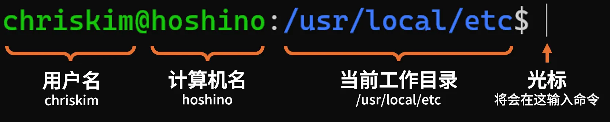
点击放大命令提示符的格式和显示内容可以自定义，不同发行版可能有自己的设计，其核心作用是提示用户：Shell 已经准备好接受下一条命令。
现在，我们可以尝试在终端里键入 echo 命令来熟悉一下交互逻辑，echo 命令会将它后面的内容输出到终端，可以理解为“复读”。
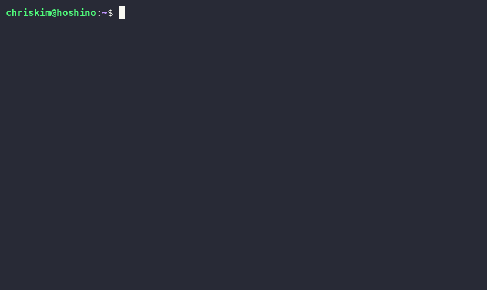
（2）执行耗时的命令
有时，我们会执行一些非常耗时的命令，此时我们会发现命令提示符迟迟未出现。这是因为默认情况下 Shell 会等待当前在前台运行的命令结束，才会准备接受下一条命令的输入，没有出现命令提示符说明上一条命令还没有运行完。
现在，我们可以尝试在终端里键入 sleep 命令来验证一下，sleep 命令的作用是等待 x 秒，例如执行 sleep 3 后，该命令就会“干等”3 秒，什么都不会做。等待 3 秒后，新的命令提示符才会重新出现，等待新一轮的用户输入。
（3）中断运行中的命令
有时我们在运行耗时的命令途中，不想继续运行了，想要中断正在运行的命令。此时就可以按下 Ctrl + C 发送中断信号，程序一般会因此停止运行，新一轮的命令提示符也会随之弹出。另外，输入的 Ctrl + C 在终端中通常会显示 ^C，其中 ^ 表示 Ctrl 键。
现在，我们可以尝试在终端里键入 sleep 60 命令，这样 Shell 会等待一分钟，然后通过按 Ctrl + C 就可以提前打断它。
1.2.2 命令的基本结构#
在熟悉了 Shell 的交互后，接下来的任务就是认识命令的结构了。一条最基本、最常见的 Linux 命令通常具有如下结构：
命令名称 [命令参数]...命令名称指定你想要调用的命令，它是大小写敏感的，即 ls 和 LS 是不同的。命令参数则控制具体的调用行为以及提供数据，命令参数可以有多个。命令名称和每个命令参数之间通常要用空格隔开，空格的数量不限。
一条命令最复杂的是命令参数，不同的程序对命令参数的解析方式是不同的，原则上程序可以设计任意的命令参数语法。但是在 Linux 的多年发展中，已经形成了一套约定俗成的命令语法，接下来将会介绍典型命令的语法。
1.2.3 典型的命令参数语法#
典型的命令参数是大小写敏感的，语法大致可以分为以下几种类别，不同程序可能会用其中一种或几种：
| 类型 | 作用 | 语法结构 | 示例 |
|---|---|---|---|
| 不带值的短参数 | 一般作为开关使用 | -[参数名] | -a |
| 带值的短参数 | 用来传递具体的参数值 | -[参数名] [参数值] | -n 10 |
| 不带值的长参数 | 一般作为开关使用 | --[参数名] | --all |
| 带值的长参数 | 用来传递具体的参数值 | --[参数名]=[参数值] | --size=10MB |
| 位置参数 | 用于传递具体的操作对象 | [操作对象]… | sample.txt |
我们用 ls 来举个例子：ls -a -l --block-size=KB /home/chriskim
同时，命令参数的语法也有一些变体，不同程序可能兼容性不同，例如：
| 类型 | 特点 | 语法结构 | 示例 |
|---|---|---|---|
| 合并的多个短参数 | 多个短参数合到一起写 | -[参数名][参数名]... | -alh |
| 不隔开的带值短参数 | 完全不隔开短参数和值 | -[参数名][参数值] | -j16 |
| 不用=的带值长参数 | 不用等号隔开参数和值，而是用空格隔开 | --[参数名] [参数值] | --size 10MB |
继续用上面的那个例子，在这里它可以写成这样的等价形式：ls -al --block-size KB /home/chriskim
在此我还要再次重复提醒一句，原则上程序可以设计任意的命令参数语法，不同的程序必须具体情况具体分析，这一小节只是让大家对命令的样子有初步的印象。
1.2.4 高效地键入命令#
从我的观察来看，很多 Linux 初学用户并没有掌握命令的键入技巧，导致命令键入非常慢，下面介绍几个必备的键入技巧。
（1）历史记录
在终端键入的命令是有历史记录的，可以用 ↑ 和 ↓ 来导航历史命令，可以多次按 ↑ 键来找到更久远的命令。
（2）TAB 键补全
我们在键入命令时不需要每个字母都手工键入，通过 TAB 键即可进行自动补全（就像 IDE 里一样）。通常来说，TAB 可以补全命令名称和文件路径；如果系统为对应命令提供了专门的补全支持，还可以补全命令参数。
如果当前输入存在多个候选项，例如以 /usr/l 开头的路径有两个，可以连续按两次 TAB 键，终端就会列出所有候选项。继续输入几个字符，消除歧义后，再按 TAB 键即可完成补全。
（3）光标导航
有时候我们会要输入超长的命令，此时如果要修改命令，可不要按死左右方向键等光标慢慢移动了，这实在太慢了。光标是有快速导航的方式的：
- Home：光标移动到命令头
- End：光标移动到命令尾
- Ctrl + ←：光标向左移动一个单词，是否可用取决于终端是否支持
- Ctrl + →：光标向右移动一个单词，是否可用取决于终端是否支持
上面就是我日用的四个快捷键，其实除此之外还有挺多快捷键的，但是由于不是很好记，因此就不在这列出了。
（4）复制粘贴
需要注意，终端里的复制粘贴快捷键有所不同，不同终端会有差别，但是大多数都支持以下一组快捷键：
- Ctrl + Insert：复制选中的文字
- Shift + Insert：粘贴文字
（5）清屏
如果想要清屏终端，使用快捷键 Ctrl + L 或者命令 clear
（6）历史命令搜索与复用
除了按上下方向键逐条翻找历史记录，还有三个极高频的效率技巧：
history：列出最近执行过的命令历史记录，可配合管道筛选（例如history | grep ssh）。- Ctrl + R：反向增量搜索历史命令。按下后直接输入命令里的任意关键词片段，Shell 会实时匹配最近一次用过的完整命令；连续按 Ctrl + R 可往前切换更早的匹配项，按 Enter 直接执行，按 → 可把命令带出来编辑。
sudo !!：当刚敲完一条很长的命令却忘记加sudo被提示权限不足时，直接输入sudo !!即可自动用管理员权限重试上一条命令（!!代表上一条完整命令）。
history | grep docker # 查找曾经执行过的 docker 相关命令
sudo !! # 用管理员权限重新执行上一条命令1.2.5 获取命令的文档#
通常来说，Linux 命令约定俗成在 --help 下提供文档。假设你突然忘记了 ls 命令的用法，可以使用 ls --help 来获得它的文档。另外，很多命令还会提供详细手册（manual），使用 man 命令名 就可以查看。
需要注意的是，必须是命令本身提供了相应的帮助文档或手册，才能够查询到。
1.3 目录、文件和路径#
1.3.1 Linux 目录结构#
相信阅读本教程的读者已经对 Windows 系统非常熟悉了，那么为了最快地学习，我们先可以只用理解 Linux 目录结构和 Windows 的不同点。总的来说，Linux 和 Windows 目录结构的重要区别有：
| Linux | Windows | |
|---|---|---|
| 目录分隔符 | 正斜杠 / | 反斜杠 \ |
| 根目录 | 目录树仅有一个根节点 / | 每个盘符都有独立的根目录，如 C:\、D:\ |
| 大小写敏感 | 通常区分大小写，File.txt 和 file.txt 是两个文件 | 默认不区分大小写，二者通常视为同一文件 |
用图来可视化的话如下图所示：（为了清晰，目录仅展开少许，并不代表实际目录只有图中所示）
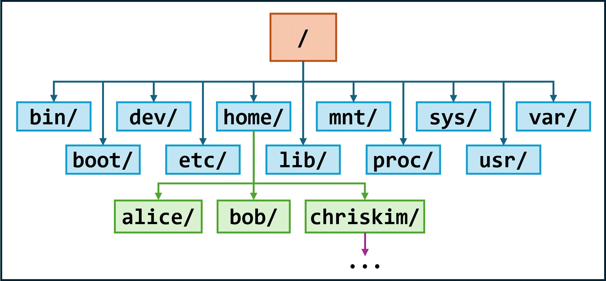
点击放大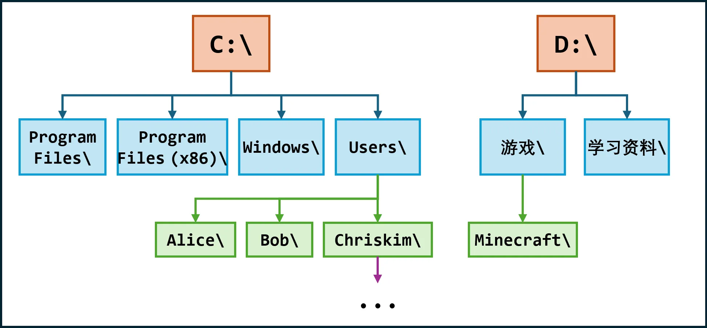
点击放大可能有些读者已经开始好奇了：Linux 根目录下的 bin/, boot/, dev/, … 都是些什么目录，装的都是什么东西。这个疑问还不必要在这里这么早地展开，但简单总结一下就是，Linux 有一套约定俗成的多层次目录结构，用于分类存放系统中的软件、库、配置文件等内容，具体内容将在 1.11 节展开。
在这里我们还不需要深究具体怎么存放，但可以先了解一点：用户的家目录在 /home/用户名 下，在家目录进行操作一般不会影响系统。
1.3.2 路径的写法#
Linux 路径的写法实际上和 Windows 基本一致，学习成本不高。
首先需要介绍的是绝对路径和相对路径的写法。绝对路径与当前工作目录无关，无论何时都指的是同一个东西；而相对路径与当前工作目录有关，给定的是指定目录与当前工作目录的相对位置关系。
如果是绝对路径，我们从根目录开始，一级一级写到目标目录，绝对路径必须以 / 开头。例如：
/root/
/home/chriskim/hello.txt
/usr/local/etc/
/data/llm/weights/Qwen3.6-35B-A3B/config.json如果是相对路径，我们用 .. 代表当前工作目录的上一层，用 . 代表当前工作目录，通过这种方式来给定指定目录与当前工作目录的相对位置，相对路径不能以 / 开头。例如：
# 如果当前工作目录为 /home/chriskim/，那么以下相对路径：
movies/
movies/interstellar.mp4
../
../../data/llm/weights/Qwen3.6-35B-A3B/config.json
././././././././././././././
# 他们分别代指的绝对路径是：
/home/chriskim/movies/
/home/chriskim/movies/interstellar.mp4
/home/
/data/llm/weights/Qwen3.6-35B-A3B/config.json
/home/chriskim/另外，Linux 对用户家目录还有特殊记号 ~，我们可以用 ~ 来快捷方便地指定家目录：
~ 等价于 /home/chriskim
~/main.cpp 等价于 /home/chriskim/main.cpp
~/../ 等价于 /home/1.3.3 切换与查看目录#
要在 Linux 目录树中移动，核心的命令是 cd，另外 ls 和 pwd 命令可以起辅助作用。
（1）cd 命令：切换目录 change directory
- 用途：切换当前的工作目录
- 核心参数：
- 位置参数：想切换的目标目录，若不传则切换到家目录
cd 命令是有许多参数的，但我们几乎只用得着一种用法，因此仅介绍这一种用法。示例如下，注意观察命令提示符的变化：
除此之外，cd - 是一个特殊的调用方式，通过传入减号 - 执行，可以回到上一次所在的目录，相当于 Windows 资源管理器的回退按钮。但是需要注意，这个历史记录只有一次，连续执行 cd - 会在当前目录和上一个目录之间来回切换，而不是逐级回退历史记录。
（2）ls 命令：打印目录 list
- 用途：打印指定目录下的内容
- 核心参数：
- 位置参数：想打印的目标目录，不传则打印当前工作目录
-a：打印隐藏内容（即.开头的对象）-l：以详细列表形式打印-F：在文件名后显示类别指示符-h：以更直观的方式显示文件大小
补充知识：Linux 中以 . 开头的文件或目录叫隐藏文件或目录，如 .cache、.config、.gitignore 等。
示例一：ll 别名 / ls -alF（最常用的用法）
在 Ubuntu 系统中，一般会帮用户默认配置 ll = ls -alF 的别名，即 Shell 检测到 ll 后会自动展开为 ls -alF，其他发行版也有配置为 ls -l 别名的，后文也会介绍如何自己配置别名。由于 ll 非常方便键入，因此是最常用的用法。
在执行 ll 后，可以发现打印出了一个列表，示例如下：
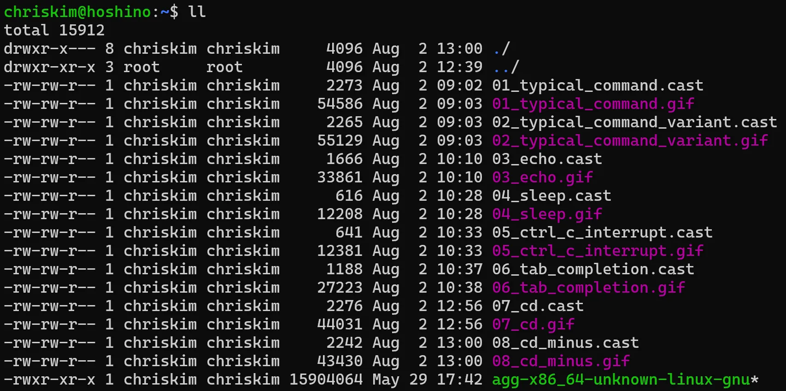
点击放大接下来对该列表的含义做解释。首先是第一行 total * 代表的是当前列出的内容占用的磁盘块数量，通常 1 磁盘块代表 1 KiB，因此 total 15912 代表着列出的内容占用了 15912KiB 的磁盘，约 16MiB。接着便是下面的列表，每一行的含义如下：
drwxr-xr-x 2 user user 4096 Aug 2 21:20 Documents/
│ │ │ │ │ │ └─ 文件名
│ │ │ │ │ └─ 最后修改时间
│ │ │ │ └─ 文件大小，单位通常是字节
│ │ │ └─ 所属组
│ │ └─ 所有者
│ └─ 硬链接数量
└─ 文件类型和权限需要注意的是，由于我们给了 -F 参数，因此会在文件名后显示类别指示符，其中：
- 没有指示符：普通文件
*：可执行文件/：目录@：符号链接|：命名管道=：套接字
初学阶段最常见的是普通文件、可执行文件和目录，符号链接也可能经常出现；其他类型暂时不需要理解。另外，文件大小、最后修改时间、文件名都好理解，剩余的内容将会在后文逐渐展开。
示例二：l 别名 / ls -CF（也是常用的用法）
在 Ubuntu 系统中，一般会帮用户默认配置 l = ls -CF 的别名，由于 l 非常方便键入，因此也是常用的用法。
对于单命令终端交互加不加 -C 参数没有任何区别，因此读者可以暂时忽略，感兴趣可以自己搜索。因此该命令与示例一仅有 -al 的区别，即不会打印隐藏文件，也不会打印详细列表。
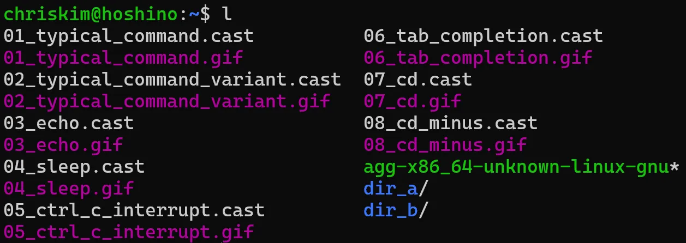
点击放大示例三：使用 -h 参数
看到示例一 ll 的输出，我们会发现文件大小连换算单位都没有，实在是太难看了，-h 参数就能解决这个问题。我们执行 ll -h（等价于 ls -alFh），就会发现列表的文件大小好看了不少，带上了 K/M 等单位。
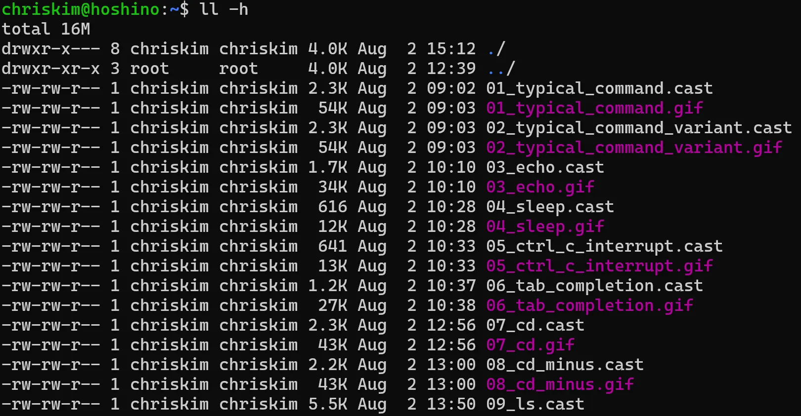
点击放大示例四：指定位置参数
在不指定位置参数时，ls 会打印当前路径下的内容，当指定后则会打印给定路径的内容。
（3）pwd 命令：打印当前工作目录 print working directory
pwd 命令很简单，无需任何参数执行后，它就会返回当前的工作目录（绝对路径）。
之前提到过，Ubuntu 的默认提示符会显示当前的工作目录，但是不同的发行版命令提示符格式可能不同。如果你用的发行版不会在提示符上显示当前工作目录，那这个命令就是必要的了
学习完这三个命令后，你就可以自由地“游走于目录树”了，想去到哪就去到。读者可以自行在 Linux 的目录结构中探索，理解目录树的结构。当然可能会碰到权限问题，不用担心，下文（1.8 节）会讲到这一点的。
1.3.4 查看与运行文件#
（1）查看文件
- 命令：
cat（意为 concatenate） - 用途：查看文件、连接文件
- 核心参数：
- 位置参数：想要查看的文件的路径，传多个则把多个文件依次连接起来并输出
该命令很简单，直接举例说明，不再详细分析：若当前工作目录为 /home/chriskim，a 文件内容为 hello ，b 文件内容为 world\n，c 文件内容为 Nya~\n，则效果如下。
需要注意的是，不要使用 cat 打开超大的文件，由于它会把整个文件完整地输出在终端，如果文件太大可能会把终端卡住，如果真卡住了就按 Ctrl + C 中断。后文（1.6 节）会提到更高级的查看方式来解决这个问题。
另外，也不要用 cat 打开二进制、图片、压缩包等非纯文本，因为它不会识别文件格式，只是直接把其中的原始数据输出到终端，因此只会喷出一大堆乱码。
（2）运行文件
如果有些文件是二进制文件（可执行程序）或者脚本文件，并且有执行权限（在下文 1.8.4 节会介绍），那么它是可以通过 Shell 调用运行的。直接在 Shell 中指定它的路径就可以运行了，例如：
# 假设调用的文件都存在
./main
./run.sh
/data/my-program
/opt/my-script.sh
# 参数根据具体的程序传递即可
./my-app --host 0.0.0.0 --port 8000
/data/main --config /data/config.json1.3.5 新建目录和文件#
前面几节讲述的都是查看，这一节将会介绍如何新建目录和文件，分别使用两个命令 mkdir 和 touch。
（1）mkdir 命令：新建目录 make directory
- 用途：新建目录
- 核心参数：
- 位置参数：想要新建目录的路径，可以传多个，一次性新建多个目录
-p：父目录不存在时一并创建，可用于一次性新建多级目录
该命令很简单，直接举例说明：
# 若当前工作目录为 /home/chriskim
mkdir test # 新建 /home/chriskim/test/
mkdir /data/docs # 新建 /data/docs/
mkdir a b c # 新建 /home/chriskim/a/, /home/chriskim/b/, /home/chriskim/c/
mkdir x/y/z # 报错 No such file or directory
mkdir -p x/y/z # 新建 /home/chriskim/x/, /home/chriskim/x/y/, /home/chriskim/x/y/z/（2）touch 命令：新建文件
- 常见用途：新建空文件
- 核心参数：
- 位置参数：想要新建文件的路径，可以传多个，一次性新建多个文件
该命令很简单，直接举例说明：
# 若当前工作目录为 /home/chriskim
touch test.txt # 新建 /home/chriskim/test.txt
touch a b c # 新建 /home/chriskim/a, /home/chriskim/b, /home/chriskim/c1.3.6 查找文件和目录#
当我们知道文件大概在哪里，但不知道具体路径时，可以使用 find 命令进行查找。find 会从指定的目录开始，递归检查其中的文件和子目录。
find 最常见的结构如下：
find [起始目录] [查找条件]最核心的查找条件有：
-name 名称：按照名称查找，区分大小写-iname 名称：按照名称查找，不区分大小写-type f：只查找普通文件-type d：只查找目录-maxdepth n：最多向下查找 n 层目录
直接通过几个例子理解：
# 在当前目录及其子目录中查找 config.json
find . -name "config.json"
# 在家目录及其子目录中查找所有 .txt 文件
find ~ -name "*.txt"
# 不区分大小写查找所有名称以 readme 开头的对象
find . -iname "readme*"
# 在 /data 中只查找名为 checkpoints 的目录
find /data -type d -name "checkpoints"
# 在 /data 中只查找 .pt 文件
find /data -type f -name "*.pt"
# 只查找当前目录及其下一层，不再继续深入
find . -maxdepth 1 -name "*.txt"这里出现的 * 是通配符，可以简单理解为“任意一段字符”，例如 "*.txt" 可以匹配所有以 .txt 结尾的名称。通配符将在后文 1.7.1 节详细介绍。
需要注意，当 -name 或 -iname 中使用 * 等通配符时，建议像上面的例子一样用引号包起来，让通配符交给 find 处理，而不是提前被 Shell 展开。这个原理也会在 1.7.1 节详细介绍。
1.4 复制、移动和重命名#
这一节非常简单，单纯就是对象（文件、目录…）的复制和移动。
1.4.1 复制对象#
- 命令：
cp（意味 copy） - 用途：复制对象
- 核心参数：
- 位置参数 1：原对象路径
- 位置参数 2：目标路径
-r：是否递归复制（复制目录时使用）
cp 命令的行为与目标对象是否已经存在有关。若目标对象已经存在：
- 文件 → 已存在目录：把文件复制到目标目录里面
- 目录 → 已存在目录：把目录复制到目标目录里面
- 文件 → 已存在文件：用文件内容覆盖目标文件（不可恢复！！！）
- 目录 → 已存在文件：报错，无效操作
# 如果目标对象路径存在（/data 目录和 exist.txt 都存在）
cp file.txt /data # 将 file.txt 复制为 /data/file.txt
cp -r dir /data # 将 dir/ 目录复制为 /data/dir/
cp file.txt exist.txt # 用 file.txt 的内容覆盖 exist.txt
cp -r dir exist.txt # 报错！无效操作需要注意，如果目标目录中已经存在同名对象，cp 可能会覆盖或合并其中的内容：
cp file.txt /data # 如果 /data/file.txt 已存在，则覆盖它
cp -r dir /data # 如果 /data/dir 已存在，则将内容合并到其中如果目标对象不存在，但目标对象的上一层目录存在，cp 会按照目标路径创建一个新的副本。但需要注意，cp 不会根据扩展名判断对象类型。目标名称没有扩展名，并不代表它一定是目录；目标名称带有 .txt，也不代表它一定是文件。示例：
# 如果目标对象不存在（但上一层目录存在）
cp file.txt /data/new.txt # 将 file.txt 复制为 /data/new.txt
cp file.txt /data/new_dir # 将 file.txt 复制为名为 new_dir 的文件（cp 不会根据扩展名判断对象类型）
cp -r dir /data/new_dir # 将 dir/ 复制为 /data/new_dir/ 目录
cp -r dir /data/new.txt # 将 dir/ 复制为 /data/new.txt/ 目录（cp 不会根据扩展名判断对象类型）如果目标对象的上一层目录不存在，cp 不会自动创建这些目录，而是直接报错：
cp file.txt /this/is/a/non/exist/directory/file.txt1.4.2 移动和重命名对象#
- 命令：
mv（意味 move） - 用途：移动对象
- 核心参数：
- 位置参数 1：源对象路径
- 位置参数 2：目标路径
在 Linux 中，重命名也可以理解为一种移动：对象仍然位于原来的目录中，只是移动到了一个新的名称。
mv 命令的行为主要与目标对象是否已经存在有关。若目标对象已经存在：
- 文件 → 已存在目录：把文件放到目标目录里面
- 目录 → 已存在目录：把目录放到目标目录里面
- 文件 → 已存在文件：用文件覆盖目标文件（不可恢复！！！）
- 目录 → 已存在文件：报错，无效操作
# 如果目标对象路径存在（/data 目录和 exist.txt 文件都存在）
mv file.txt /data # 将 file.txt 移动为 /data/file.txt
mv dir /data # 将 dir/ 目录移动为 /data/dir/
mv file.txt exist.txt # 用 file.txt 覆盖 exist.txt
mv dir exist.txt # 报错！不能用目录替换普通文件需要注意，如果目标目录中已经存在同名对象，mv 的行为还会受到同名对象类型的影响：
mv file.txt /data # 如果 /data/file.txt 已存在，则覆盖它
mv dir /data # 如果 /data/dir 已存在并非空，则报错；如果它为空，则被源目录替换如果目标对象不存在，但目标对象的上一层目录存在，mv 会让原对象变为指定的目标路径。但需要注意，mv 不会根据扩展名判断对象类型。目标名称没有扩展名，并不代表它一定是目录；目标名称带有 .txt，也不代表它一定是文件。示例：
# 如果目标对象不存在（但上一层目录存在）
mv file.txt /data/new.txt # 将 file.txt 移动并重命名为 /data/new.txt
mv file.txt /data/new_dir # 将 file.txt 移动为名为 new_dir 的文件（mv 不会根据扩展名判断对象类型）
mv dir /data/new_dir # 将 dir/ 移动并重命名为 /data/new_dir/
mv dir /data/new.txt # 将 dir/ 移动为名为 new.txt 的目录（mv 不会根据扩展名判断对象类型）如果目标对象的上一层目录不存在，mv 不会自动创建这些目录，而是直接报错：
mv file.txt /this/is/a/non/exist/directory/file.txt1.5 删除对象#
Linux 删除对象的命令是 rm，请注意它删除的文件不会进入“回收站”，删除的对象不会进入桌面环境的“回收站”，因此删除对象时一定要小心谨慎。
- 命令：
rm（意为 remove） - 用途：删除对象（文件或目录）
- 核心参数：
- 位置参数：想删除的文件或目录路径，传多个则同时删除
-i：每次删除前询问用户-I：在较危险情况下询问用户（递归删除目录，或一次删除超过三个操作对象时，在执行前统一询问一次）-f：强制删除，不询问用户，操作对象不存在时不报错-d：删除空目录-r：递归删除目录
- 命令：
rmdir（意为 remove directory） - 用途：删除空目录
- 核心参数：
- 位置参数：想删除的空目录，传多个则同时删除
1.5.1 删除文件#
使用 rm 命令直接传入文件路径即可，传入多个文件路径则同时删除。
rm test.txt
rm -i a.cpp b.cpp # 删除每个文件前，rm 都会再次询问用户
rm /data/model-00001-of-00002.safetensors /data/model-00002-of-00002.safetensors1.5.2 删除空目录#
可以使用 rmdir 命令，也可以使用 rm -d 命令。直接传入空目录路径即可，传入多个空目录路径则同时删除。非空目录无法删除，会报错。
rmdir test_dir # 删除空的 test_dir 目录
rmdir dir_a dir_b # 同时删除空的 dir_a 和 dir_b
rm test_dir # 报错，不加参数只能删文件
rm -d test_dir # 删除空的 test_dir 目录
rm -d dir_a dir_b # 同时删除空的 dir_a 和 dir_b1.5.3 删除有内容的目录#
如果要删除里面有内容（文件或子目录）的目录，此时就得用 rm 的 -r 参数了，该参数指定 rm 递归进行删除，将目录以及目录里的所有内容删除。直接传入目录路径即可，传入多个目录路径则同时删除，传文件路径其实也会照常删除。
rm -r test_dir # 将 test_dir 以及里面所有内容删除，不可恢复
rm -ri test_dir # 将 test_dir 以及里面所有内容删除，不可恢复，但在每次删除前 rm 都会再次询问用户我强烈建议在使用 rm -r 删除目录时，若不是目录内文件非常多，就把 -i 带上，这样误删的几率会小很多，示例如下：
当然，如果你的目录内内容非常多，肯定是不可能全部人工批准删除的。因此可以尝试使用 -I 参数，这个参数只会在 rm 觉得比较危险的情况下才会发出提示（但不可能防住所有误删）：rm -rI test_dir
如果你真的确保无误后，使用 -f 参数可以不询问用户强制删除掉这个目录：rm -rf test_dir
1.5.4 再提安全性#
为了让 rm 命令的删除更安全，在这里强调一些容易出问题的点。
（1）不要手滑打多路径空格
- 假如你要执行的命令是：
rm -rf /home/chriskim/test_dir - 千万不要手滑打成了：
rm -rf /home/chriskim /test_dir
如果变成这样，命令就变成了递归删除 /home/chriskim 和 /test_dir。尽管第二个路径 /test_dir 不存在，但是第一个路径 /home/chriskim 是存在的，rm 命令会非常听你的话，将整个家目录删除干净，什么都不会留下。
- 更不要手滑打成了：
rm -rf / home/chriskim/test_dir
如果打成这样，从理论上来说，rm -rf / 会把整个系统里能删的东西全都删了！但是 rm 对根路径进行了特判，删除根路径时会报错“rm: it is dangerous to operate recursively on ‘/’”并停止。
（2）千万不要打错绝对路径
- 假如你要执行的命令是：
rm -rf data - 千万不要手滑打成了：
rm -rf /data
第一个命令删除的是当前工作目录下的 data 目录，比如你的 AI 训练项目的数据集。而第二个命令删除的是系统根目录下的 /data 目录，删掉这个可能就把整个服务器存的所有数据集全部删除了！
（3）与通配符、变量或脚本搭配
虽说这些技巧还没有提到，但是这些使用方式都是很有风险的，在后续提到后也得再三注意！
1.6 查看和编辑#
对初学者而言，使用命令行查看和编辑文件通常不如可视化编辑器直观。但是，当任务比较简单时，例如修改小型配置文件或批量替换几个单词，直接在终端中完成往往比启动 VS Code 更快捷。因此，学习在命令行中查看与编辑文件仍然是有价值的。
1.6.1 分页查看文本#
如果要分页查看文本，有两个命令可用：more 和 less。其中 more 更老，less 更强，大多数情况下无脑选 less 就行，当环境里只有 more 时使用 more 也能实现类似功能。
（1）more 命令
- 用途：分页查看文件
- 核心参数：
- 位置参数：想看的文件的路径
+行号：从指定行开始显示+/字符串：第一次匹配的位置开始显示
- 快捷键：
- Space：下一屏
- Enter：下一行
q：退出
more access.log # 分页查看 access.log
more +100 access.log # 从 100 行开始分页查看 access.log
more +/error access.log # 从第一次匹配 error 的位置开始显示（2）less 命令
- 用途：更强的分页查看文件
- 核心参数：
- 位置参数：想看的文件的路径
+行号：从指定行开始显示+/字符串：第一次匹配的位置开始显示-N：显示行号-S：长行不断行，可左右滚动
- 快捷键：
- Space：下一屏
↓或 Enter：下一行- ↑：上一行
- ←：向左滚动长行，通常配合
-S使用 - →：向右滚动长行，通常配合
-S使用 q：退出
less 命令除了能向上滚动之外，多了很多功能，是非常强大的工具，有非常多快捷键功能。为了教程的简洁性，这里只挑选了最实用的一些内容。如果懒得记，其实什么参数都不传，直接 less 打开也够用。
下面给出一个示例，命令为 less -NS access.log：
1.6.2 查看文本头尾#
如果要查看文本头尾，有两个命令分别可用：head 和 tail
（1）head 命令
- 用途：查看文件头部
- 核心参数：
- 位置参数：想看的文件的路径
-n 行数：显示头部指定行数，默认 10 行
head access.log # 打印出文件前 10 行
head -n 100 access.log # 打印出文件前 100 行（2）tail 命令
- 用途：查看文件尾部
- 核心参数：
- 位置参数：想看的文件的路径
-n 行数：显示尾部指定行数，默认 10 行-f：持续跟踪文件尾部，若有增多则打印（适合跟踪日志）
tail access.log # 打印出文件尾 10 行
tail -n 100 access.log # 打印出文件尾 100 行
tail -f access.log # 打印出文件尾 10 行，然后持续跟踪文件尾部，若有增多则打印1.6.3 文本编辑器#
上面介绍的都是比较抽象的非交互式文本查看和编辑，实际上 Linux 上也有命令行形式的交互式编辑器，下面将会介绍两款编辑器叫做 vim 和 nano。前者上手难度较高但最普遍，几乎所有 Linux 发行版都内置；后者上手难度较低，但可能不内置，要手动安装。
（1）vim 编辑器
vim 编辑器是 Linux 里出了名的上手难度极高的编辑器。如果不看文档的话，初学者甚至根本没法退出 vim 编辑器。
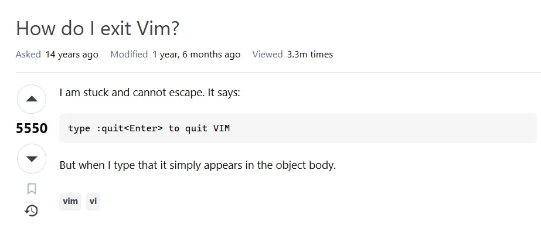
点击放大如果要讲解 vim 编辑器的完整用法，恐怕文章的长度会比本篇教程的全文还长很多，因此这里只会介绍最基础、最核心的用法。
打开文件
要使用 vim 编辑器，首先使用 vim [待编辑文件路径] 打开想要编辑的文件，例如 vim test.txt。vim 编辑器有 3 个主要模式，打开文件后默认进入的是普通模式：
| 模式 | 主要用途 | 进入方式 |
|---|---|---|
| 普通模式（Normal） | 移动光标、删除、复制、粘贴等 | 启动后默认进入；按 ESC 返回 |
| 插入模式（Insert） | 输入和修改文本 | 普通模式下按 i |
| 命令模式（Command-line） | 保存、退出、查找、替换等 | 普通模式下输入 :（即 SHIFT + ;） |
编辑文件
在普通模式下，并不能输入和修改文本，需要先按 i 进入插入模式，此时左下角显示 --INSERT--。进入插入模式后就是熟悉的编辑方式了，键盘输入文本，回车换行，方向键和 HOME END 移动光标位置。
保存文件和退出
当完成编辑后，按 ESC 键退出插入模式到普通模式，此时左下角 --INSERT-- 消失。然后输入英文冒号 :（即 SHIFT + ;）进入命令模式，此时左下角出现冒号开头的命令键入框。与保存文件相关的命令如下：
:w：保存不退出:wq：保存并退出（这个常用）:q：退出，文件有未保存修改时会拒绝:q!：强制退出，文件有未保存修改时丢弃
在冒号开头的命令键入框输入命令后，按回车键执行就可以了。至此，你已经学会了 vim 最基础的使用方式，现在至少不会退出不了编辑器了。下面是一个完整流程的演示：
其他常用功能
有一些功能很简单且实用，在这里一并介绍了。
在普通模式时（按 ESC 退出到普通模式），输入 / 来进行搜索，输入 /字符串 来搜索指定字符串。然后进入命令模式（在普通模式输入 :），可以使用以下命令开启和跳转行号：
:set number：开启行号显示:行号：跳转到指定行号
（2）nano 编辑器
nano 编辑器虽然相对于 vim 只能算一个小弟，但是操作逻辑很直观，上手难度很低，同时完全足够满足基本编辑任务。我个人更喜欢 nano，不到万不得已不会使用 vim。
打开文件
一样的，要使用 nano 编辑器，首先使用 nano [待编辑文件路径] 打开想要编辑的文件，例如 nano test.txt，另外可以使用 -l 参数开启行号，例如 nano -l test.txt。
打开文件后 nano 编辑器会直接在底部显示常用功能的快捷键。
编辑文件
nano 编辑器的操作逻辑很直观，打开后直接就是编辑模式，键盘输入文本，回车换行，方向键和 HOME END PGUP PGDN 移动光标位置。
保存文件和退出
当完成编辑后，使用快捷键 Ctrl + S（老版本是 Ctrl + O）保存文件，然后使用 Ctrl + X 退出编辑器。至此，你已经学会了 nano 最基础的使用方式，下面是一个完整流程的演示：
其他常用功能
打开文件后 nano 编辑器会直接在底部显示常用功能的快捷键，其中 ^ 符号代表着 CTRL 键，因此我也不需要再赘述了。
1.7 特殊符号#
在 Linux 命令行中，有许多符号有特殊的功能，本节将会介绍最核心的几个功能：
- 通配符：用一个模式同时匹配多个符合条件的文件或目录。
- 重定向：改变命令输入或输出的来源和去向。
- 命令连接：把多个命令组合起来执行。
- 变量：声明变量来临时存储数据，便于数据复用。
- 引号：将一段内容作为整体，并控制其中某些特殊内容是否被解释。
- 转义：让原本具有特殊作用的字符变成普通字符。
1.7.1 通配符#
通配符用于按照一定的规律匹配文件或目录的名称。Shell 中最常用的通配符有：
*：匹配任意数量的任意字符，包括零个字符?：匹配任意一个字符[...]：匹配方括号中指定的任意一个字符
通配符会被 Shell 展开为具体的内容，因此可以和命令一起合用。例如 echo ./*.json 可以打印出当前目录下的所有 JSON 文件名。
（1）任意数量任意字符 *
示例匹配：
- 可以被
*.txt匹配的示例file.txt123.txt
- 可以被
.*.txt匹配的示例.file.txt.123.txt
- 可以被
checkpoint*.ckpt匹配的示例checkpoint01.ckptcheckpoint_latest.ckpt
- 可以被
cache*匹配的示例cache.bincache-file.txt
需要注意，默认情况下如果文件名以 . 开头，匹配模式也需要显式写出开头的 .
（2）一个任意字符 ?
示例匹配：
- 可以被
?.txt匹配的示例1.txta.txt
- 可以被
img_??.png匹配的示例img_00.pngimg_aa.png
- 可以被
archive.tar.gz.part?匹配的示例archive.tar.gz.part1archive.tar.gz.part9
（3）指定的字符 [...]
示例匹配：
- 可以被
[ab].json匹配的示例a.jsonb.json
- 可以被
img_[0-9].png匹配的示例img_0.pngimg_9.png
- 可以被
[0-9a-fA-F][0-9a-fA-F]匹配的示例601bef
1.7.2 重定向#
重定向用于改变命令从哪里读取输入，以及把输出发送到哪里。Shell 中最常用的重定向符号有：
- 重定向输入：
<：从文件中读取标准输入 (stdin)
- 重定向输出：
>：将标准输出 (stdout) 写入文件，原有内容会被覆盖>>：将标准输出 (stdout) 追加到文件末尾2>：将标准错误 (stderr) 写入文件，原有内容会被覆盖2>>：将标准错误 (stderr) 追加到文件末尾
（1）重定向输入
我们用以下 Python 程序 mul.py 举例，它从标准输入获得两个数字然后输出相乘结果，代码就三行：
a = int(input())
b = int(input())
print(a * b)我们正常使用 python mul.py 运行时，需要用键盘输入内容来发送给程序。而通过 < 符号，就可以直接从文件里读取数据作为标准输入发送给程序了。例如有一个文件 input.txt 内容如下：
8
9然后我们通过命令 python3 mul.py < input.txt 直接将文件内容发送给程序，此时程序就不会等待用户输入，而是直接输出结果：
72（2）重定向输出
我们用以下 Python 程序 test.py 举例，它首先正常输出消息到标准输出，然后会由于 assert False 崩溃：
print("this is a message to stdout")
assert False, "this is a message to stderr"Shell 中，标准输出和标准错误都会打印到终端上，所以我们用 python3 test.py 运行时，会看到以下输出，第一行是正常输出，后面全是报错：
this is a message to stdout
Traceback (most recent call last):
File "/home/chriskim/test.py", line 2, in <module>
assert False, "this is a message to stderr"
^^^^^
AssertionError: this is a message to stderr然后我们通过命令 python3 test.py > output.txt 2> error.txt 将输出内容导出到文件时，此时终端里就不会显示任何消息了，但是我们查看生成的 output.txt 和 error.txt 两个文件，可以发现它们的内容分别为：
this is a message to stdoutTraceback (most recent call last):
File "/home/chriskim/test.py", line 2, in <module>
assert False, "this is a message to stderr"
^^^^^
AssertionError: this is a message to stderr1.7.3 命令连接#
命令连接用于将多个命令组合在一起执行。Shell 中最常用的命令连接符号有：
- 连续执行：
;：依次执行多个命令&&：前一个命令执行成功时，才执行后一个命令||：前一个命令执行失败时，才执行后一个命令
- 管道符号：
|：将前一个命令的标准输出（stdout）连接到后一个命令的标准输入（stdin）
（1）连续执行
三种连续执行符号都是从左到右执行命令，只不过通过成功和失败（返回码）来控制是否执行。直接举例说明：
# 从左到右依次执行，不管成功或者失败
mkdir test; cd test; touch hello.txt
# 从左到右依次执行，只有成功才继续，无论在哪失败执行链就会断开
mkdir test && cd test && touch hello.txt
# 前一个命令失败后才会执行后面的命令
cd non-exist-dir || echo "无法进入目录"（2）管道符号
管道符号是一个非常实用的特殊符号，它把前面一个命令的输出连接到后面一个命令的输入，因此通过管道符号能完成更复杂的事情。例如我们可以将现在已经学过的命令组合一下：
ll | head -n 50：使用ll列出目录并只看前 50 行cat access.log | head -n 50 | tail -n 25：查看access.log的第 26~50 行
需要注意的是，管道符号并不是前面一个命令全部处理完后下一个命令才开始处理。相反的，所有命令同时启动，只要上一个命令有了输出就会交给下一个命令，像流水线一样。因此，管道符号若中间的命令报错退出，也不会停止后续的命令，只是后续命令再也收不到输入了。
（3）优先级
到这里，可能有些读者已经开始想 a | b && c || d 这种奇怪命令的执行优先级了，但是我认为搞这种难以阅读的离谱命令除了出考题外就没有价值，因此我不建议把各种连接符号混在一起用。如果确有复杂需求，写脚本比写一长串连在一起的命令要好。
不过为了完整性，我还是简单提一下优先级。连接符的优先级为 | > && = || > ;，唯一需要注意的就是 && 和 || 是完全平级的，从左向右结合。
1.7.4 变量#
使用变量临时存储数据，便于数据复用。Shell 中与变量最常见的写法有：
=：为变量赋值$变量名或${变量名}：读取变量的值
（1）设置变量
在 Bash 中，可以直接使用 变量名=值 创建变量，例如 os=linux
需要注意，= 两侧不能随意添加空格，如果写成 os = linux，那么它就会被理解成执行名为 os 的命令，并将 = 和 Linux 作为参数，完全不是我们想要的行为。
变量名通常由字母、数字和下划线组成，但不能以数字开头：
- 正确：
name=Linuxuser_name=ChrisKimversion2=Ubuntu
- 错误
2version=Ubuntu
（2）读取变量
在变量名前添加 $ 即可读取变量的值，例如使用 echo $os 就会打出我们刚才设定的值 linux 了。需要注意只有读取需要加 $ 符号，赋值（和后面的删除）都不需要。
有时候我们希望把变量和其他字符串连在一起，为了防止分不清界限，也可以用带括号的写法，如 echo ${os}，它的效果和不带括号是一样的，只不过这样你就可以写 echo ${os}system 这样的命令，它会输出 linuxsystem 这样连起来的字符串。
（3）删除变量
使用 unset 可以删除变量，如 unset os。
1.7.5 引号#
引号用于将一段内容作为一个整体，并控制 Shell 是否继续解释其中的特殊字符。Shell 中最常用的引号有：
'...'：单引号，其中的内容基本都按普通字符处理"..."：双引号，其中的大部分内容按普通字符处理，但变量等仍然可以展开
例如如果有一个目录名称叫 My File，它包含空格，直接打 cd My File 的话，目录名就被空格分开了导致无法正常进入，此时用引号扩起 cd 'My File' 就能正常进入了。
（1）单引号
单引号中的内容基本都按普通字符处理，无论变量还是特殊符号，写什么就是什么。例如以下命令中单引号中的特殊字符都会原样解释：
echo '*.txt'：直接输出字符串*.txt而不是匹配的内容echo 'this is ${os} system'：直接输出字符串this is ${os} system而不是变量内容
（2）双引号
双引号中的内容大多都按普通字符处理，但是变量会被正常展开。例如以下命令中双引号中的特殊字符都会原样解释：
echo "*.txt"：直接输出字符串*.txt而不是匹配的内容echo "<>|*?"：直接输出字符串<>|*?
但是双引号中的变量会被正常展开：
echo "$os"：输出变量的值linuxecho "this is ${os} system"：输出字符串this is linux system
在变量的实际使用中，建议永远将其双引号扩起，否则可能出现很恐怖的操作失误。看到下面的例子：
path="/home/chriskim/project data/test project"
rm -rf $path
# 执行上一行命令后，Shell 将会展开变量，变成
rm -rf /home/chriskim/project data/test project
# 此时路径已经被空格裂开了，rm 会尝试删除掉 /home/chriskim/project 和 ./data/test 和 ./project，假如正好有这些文件，那就是非常恐怖的误删失误了
# 如果将变量双引号扩起，就能避免该问题
rm -rf "$path"
# 此时路径仍然作为一个整体来执行
rm -rf "/home/chriskim/project data/test project"1.7.6 转义#
有时我们就是想在命令里用特殊符号的字面意思，就可以用反斜杠 \ 转义。
例如我们想创建一个名为 *.txt 的文件，就可以使用 touch \*.txt，要删除他使用 rm \*.txt（如果掉了转义符，那就会把目录下所有 .txt 文件删掉咯）。空格也是可以转义的，例如如果想创建一个带空格的目录，也可以这样写命令 mkdir My\ File
当然，引号也能起到转义的作用，怎么方便怎么用就行了。
1.8 用户和权限#
1.8.1 用户和用户组#
Windows 系统虽说也是一个多用户系统，但是平时我们大多都是单用户使用的。在 Linux 中则不同了，即使用户只有一个人，我们也会常常接触它的用户相关操作。
在 Linux 中，每个用户都有自己的用户名，同时还会对应一个唯一的数字编号，称为 UID（User ID）。例如，普通用户可能叫 chriskim，而 root 用户的 UID 固定为 0。
除了用户之外，Linux 还有用户组（group）。用户组可以把多个用户归为一组，从而方便统一分配权限。每个用户默认属于同名用户组，也可以添加更多其他用户组。用户组同样有自己的数字编号，称为 GID（Group ID）。
相关的查询命令如下：
whoami：查询当前用户的用户名id：查询当前用户的完整信息groups：查询当前用户的所属组
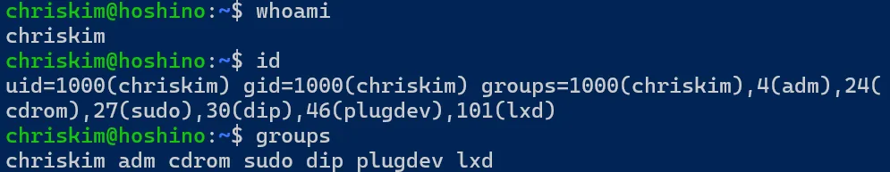
点击放大另外还有一些用户相关的常用命令：
- 命令：
passwd（意为 password） - 用途：修改用户密码
- 核心参数：
- 位置参数：留空则默认修改自己密码，给定用户名则修改其他用户的密码（改别人密码要权限）
- 命令：
su（意为 switch user） - 用途：切换用户，需要目标用户的密码才能切换（超级用户可直接切换）
- 核心参数：
- 位置参数：想要切换的目标用户名
-或-l：以登录 Shell 的方式切换
1.8.2 root 和 sudo#
Linux 中有一个特殊用户叫做 root，也称为超级用户（superuser）。root 拥有系统中的最高权限，几乎可以读取、修改和删除所有文件，也可以修改系统配置、安装软件以及管理其他用户。root 用户的 UID 固定为 0。
由于 root 用户的权限实在是太高，在执行命令时如果出现操作失误，很可能破坏整个系统。为了安全，一般来说我们都使用普通用户来操作系统，仅在需要时才临时提权到 root，此时就需要 sudo 命令。
另外，sudo 命令也不是所有用户都能使用的，而是通过配置文件赋予特定用户 sudo 权限才可使用，以此实现更精细的权限管理。使用 sudo 命令需要输入当前用户的密码。
- 命令：
sudo（意为 superuser do） - 用途：提权到超级用户来执行，需要当前用户有
sudo权限 - 核心参数：
- 位置参数：待执行的命令
-i：直接进入root的 Shell
例如，如果我们要在 / 下创建新目录 mkdir /test，这个操作是需要权限的，普通用户显示权限不足（Permission denied），那么就可以使用 sudo mkdir /test 来完成创建，该命令的含义是让 root 用户帮你执行 mkdir /test 命令。
如果要执行的操作比较复杂，可以用 sudo -i 直接切换到 root 的 Shell，这样就相当于成为了 root 用户。要返回普通用户，使用 exit 退出即可。
1.8.3 对象的所有者和所属组#
Linux 中，每个对象都有一个所有者（owner）和一个所属组（group）。系统会结合它们和文件的权限设置，判断不同用户能否读取、修改或执行这个文件。
（1）查看对象的所有者和用户组
使用已经学习过的 ls -l 命令（或 ll 别名）来查看对象的详细信息。如下图，第四列代表着文件的所有者（所属用户），第五列代表着文件的所属组：
（2）修改对象的所有者和用户组
- 命令：
chown（意为 change owner） - 用途：修改对象的所有者和用户组
- 核心参数：
- 位置参数 1：目标值，格式为
所有者:用户组，用户组可省略，省略时代表不修改 - 位置参数 2：待修改的对象路径
-R：递归修改目录内的对象
- 位置参数 1：目标值，格式为
下面是使用示例：
chown alice test.txt # 将 test.txt 的所有者改为 alice，所属组不改
chown alice:stu test.txt # 将 test.txt 的所有者改为 alice，所属组改为 stu 组
chown :stu test.txt # 将 test.txt 的所有者不改，所属组改为 stu 组
chown alice dir/ # 将 dir/ 的所有者改为 alice，所属组不改
chown -R alice dir/ # 将 dir/ 以及里面的所有内容的所有者改为 alice，所属组不改
chown -R alice:stu dir/ # 将 dir/ 以及里面的所有内容的所有者改为 alice，所属组改为 stu 组1.8.4 对象的权限#
（1）查看对象的权限
使用已经学习过的 ls -l 命令（或 ll 别名）来查看对象的详细信息。如下图，第一列代表着文件的权限：
第一列的权限的显示格式如下：
-rwxrwxrwx
││ │ │
││ │ └─ 7~9位：其他用户（others）的权限
││ └──── 4~6位：所属组（group）的权限
│└─────── 1~3位：所有者（user）的权限
└──────── 第0位：文件类型，-为普通文件，d为目录其中，代表权限的最小单位是形为 rwx 的三位字符串，含义如下：
r：读取（read）w：写入（write）x：执行（execute）-：没有对应权限
接下来举几个例子：
rwxrwxrwx：所有者、所属组、其他用户都可读、可写、可执行rwxr-xr-x：所有者可读、可写、可执行，所属组和其他用户可读、可执行rw-r--r--：所有者可读、可写，所属组和其他用户可读rw-------：所有者可读、可写，所属组和其他用户没有任何权限
（2）对象权限的含义
对于文件和目录，对象权限的含义是不同的。对于文件：
r：能否读取该文件内容w：能否修改该文件内容x：能否运行该文件
对于目录：
r：是否能列出该目录下的内容w：是否能修改目录中的对象列表，例如创建、删除和重命名对象（和对象内容无关）x：是否能进入该目录
这里最需要注意的是目录的权限，目录一定要有 x 权限才可以进入，多层目录只要其中有一层目录没有 x 就会导致进不去：例如 /a/b/c 如果 b 目录没有 x 权限，那么 c 目录都是进不去的。
（3）修改对象的权限
- 命令：
chmod（意为 change mode） - 用途：修改对象的权限
- 核心参数：
- 位置参数 1：权限目标值，格式见下文
- 位置参数 2：待修改的对象路径
-R：递归修改目录内的对象
该命令的权限目标值格式有点复杂，主要分为两种：数字形式、字母形式。
数字形式
数字形式适合一次性指定完整的权限。
将每一个形为 rwx 的三位字符串看作一个二进制数字，有该权限则为 1，没有对应权限则为 0，那么每种权限组合都对应一个二进制数字，也对应一个十进制数字：
| 权限 | 二进制 | 八进制 |
|---|---|---|
--- | 000 | 0 |
--x | 001 | 1 |
-w- | 010 | 2 |
-wx | 011 | 3 |
r-- | 100 | 4 |
r-x | 101 | 5 |
rw- | 110 | 6 |
rwx | 111 | 7 |
那么形如 rwxrwxrwx 的权限格式就能用三个十进制数字来表示了，例如以下对应关系：
rwxrwxrwx：777rwxr-xr-x：755rw-r--r--：644rw-------：600
通过该格式修改对象权限的示例如下：
chmod 777 dir/ # 将 dir/ 权限设为 rwxrwxrwx
chmod 755 -R dir/ # 将 dir/ 和里面所有内容的权限设为 rwxr-xr-x
chmod 644 a.md # 将 a.md 权限设为 rw-r--r--
chmod 600 privkey # 将 privkey 权限设为 rw-------字母形式
字母形式适合对权限进行增减
首先通过下面几个字母指定要修改哪一类用户的权限：
u：所有者g：所属组o：其他用户a：所有用户
然后使用符号代表操作类型：
+：增加权限-：移除权限=：直接设置为指定权限
权限仍然使用：
r：读取w：写入x：执行
通过该格式修改对象权限的示例如下：
chmod u+x main # 给 main 添加所有者的 x 权限
chmod a-x main # 给 main 移除任何人的 x 权限
chmod u=rwx,g=rw,o=rw main # 给 main 设置为 rwxrw-rw- 权限（4）常用对象权限
对于 8*8*8=512 中对象权限组合，常用的权限组合很少，下面介绍 5 种最常用的几种组合：
| 权限组合 | 八进制 | 常用场景 |
|---|---|---|
rwxrwxrwx | 777 | 大门敞开，非常危险但方便 |
rwxr-xr-x | 755 | 普通目录或可执行文件 |
rwx------ | 700 | 私密目录 |
rw-r--r-- | 644 | 普通文件 |
rw------- | 600 | 私密文件 |
1.9 软件包管理#
在 Windows 中，我们通常会前往软件官网下载安装程序，再手动完成安装和卸载。而在 Linux 中，更常见的方式是通过软件包管理器统一管理软件，当然也可以选择手动安装。
不同 Linux 发行版的软件包格式和软件包管理器是不同的，Ubuntu 使用的软件包格式主要为 .deb，默认软件包管理命令是 apt。通过 apt，我们可以从软件包仓库中搜索、下载、安装、升级和卸载软件，同时自动处理软件之间的依赖关系。
1.9.1 软件包仓库和配置镜像#
Ubuntu 的软件存放在统一的软件包仓库中，而并非分散在各个软件开发者的网站上。当进行软件安装时，apt 将会从系统配置好的软件包仓库中查找并下载对应的软件包。
由于 Ubuntu 官方的软件包服务器可能距离我们较远，因此实际使用时经常会使用镜像（如果你有魔法那就无所谓了）。镜像服务器会同步官方软件包仓库中的内容，并部署在不同地区，从而提高软件下载速度。在中国大陆常用的镜像有：
- 清华大学镜像站：https://mirrors.tuna.tsinghua.edu.cn/
- 南京大学镜像站：https://mirror.nju.edu.cn/
- 校园网联合镜像站：https://mirrors.cernet.edu.cn/
- 阿里云镜像站：https://developer.aliyun.com/mirror/
接下来将会介绍配置镜像站的方式，当前正处于 Ubuntu 镜像配置文件新老交替的时期，因此当前有两种配置文件的格式同时在使用。我们先介绍最新的配置格式（DEB822 格式），从 Ubuntu 24.04 LTS 开始将会使用这种配置格式。
（1）新版配置格式（DEB822 格式）
新版软件包仓库配置文件位置在：/etc/apt/sources.list.d/ubuntu.sources
使用自己习惯的文件编辑器（例如 vim、nano）打开它，删除其中的内容后粘贴新配置即可。替换内容一般在各大镜像站的文档里会帮忙写好，例如下图的 TUNA 镜像站。选好对应的 Ubuntu 版本后，复制镜像站提供的配置文件即可。
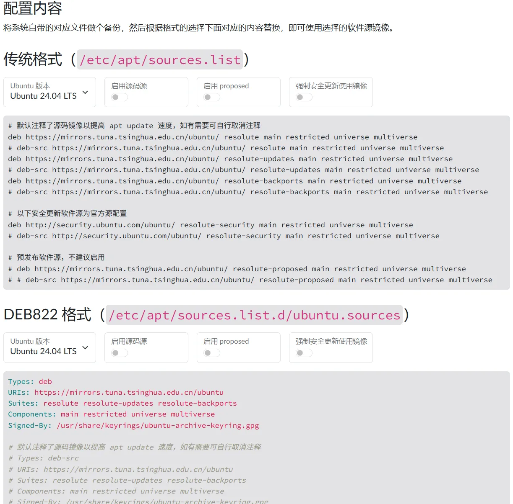
点击放大当然，在修改软件源时，建议把原始软件源配置文件复制备份一份为 ubuntu.sources.bak，以备不时之需。
（2）传统格式
传统格式软件包仓库配置文件位置在：/etc/apt/sources.list
使用自己习惯的文件编辑器（例如 vim、nano）打开它，删除其中的内容后粘贴新配置即可。各大镜像站同样也会提供对应的配置文件。
1.9.2 安装软件包#
（1）刷新软件包列表
Ubuntu 会在本地保存一份软件包索引，其中记录了软件仓库中有哪些软件包、对应版本以及依赖关系等信息。因此为了每次能找到最新的软件包，在安装前首先要刷新一次软件包列表，使用以下命令：
sudo apt update（2）安装软件包
接着就可以安装软件包了，下面是几个命令示例：
sudo apt install curl # 安装 curl 软件包，需要手动确认
sudo apt install curl -y # 安装 curl 软件包，无需确认
sudo apt install curl wget htop # 安装 curl wget htop 软件包，需要手动确认例如我们以安装 build-essential 软件包为例，完整流程如下：
（3）搜索软件包
有时我们并不知道想要的软件包具体叫什么名字，就可以使用搜索功能通过关键词查询所有相关软件包。
例如我们想安装 openjdk，但不知道具体有哪些版本，软件包叫什么，就可以执行 apt search openjdk 命令搜索所有相关软件包。
apt-get install、apt-get update。两者底层使用同一套机制，apt 是后来推出、界面更友好的交互式版本；日常手动操作直接用 apt 即可，遇到旧教程的 apt-get 照常用或直接换成 apt 都没问题。1.9.3 升级软件包#
软件包是会不断更新的，软件包管理器可以非常方便的进行更新，使用命令 sudo apt upgrade 来更新所有软件包。
1.9.4 卸载和清理软件包#
（1）列出已安装的软件包
如果要查询已经安装的软件包，使用 apt list --installed 命令。
（2）卸载软件包
如果要卸载已经安装的软件包，使用 sudo apt remove 软件包名称 命令，如果想卸载的同时清除配置，使用 sudo apt purge 软件包名称 命令。
（3）清理无用依赖
在我们安装软件包时，apt 会自动处理安装它的所有依赖，但是我们在卸载该软件包时，只有本体会被卸载，依赖不会卸载。如果要清理所有的无用依赖，可以使用命令：sudo apt autoremove
1.10 远程操作#
对于 Windows 来说，最常使用方式是本地操作。而 Linux 系统常常工作在机房的服务器中，显然我们不可能搬个显示器在机房里操作，因此远程操作和本地操作对于 Linux 来说同样常用和重要。
Linux 中最常用的远程操作方式是 SSH（Secure Shell）。通过 SSH，我们可以在自己的电脑上连接到另一台 Linux 主机，在远程主机上执行命令，也可以在两台主机之间传输文件。
Windows 10/11、Linux 和 macOS 都已经可以直接使用 SSH 客户端，因此通常不需要额外安装软件。同时我也非常建议初学者首先从最原始的 SSH 命令开始使用 Linux，在熟悉 Linux 后再选择更加强大的图形化 SSH 客户端。
1.10.1 远程连接#
注意，这个命令是本地电脑命令行执行哦，是从本地远程到远程 Linux 计算机。
- 命令：
ssh - 用途：通过 SSH 连接远程主机
- 核心参数：
- 位置参数：目标主机，格式为
用户名@主机地址 -p：指定 SSH 端口，若为默认端口22时可省略
- 位置参数：目标主机，格式为
例如，如果我的用户名为 chriskim，要连接地址为 192.168.6.122 的 Linux 计算机，端口默认，则使用以下命令：
ssh chriskim@192.168.6.122SSH 第一次连接一台陌生的计算机时，会显示该主机的 SSH 密钥指纹，并询问是否信任这台主机。确认连接的地址无误后，输入 yes 并回车即可。随后输入远程用户的密码，就可以进入服务器。
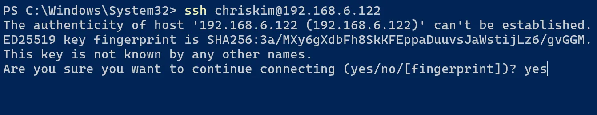
点击放大远程操作完成后，使用 exit 即可退出远程 Shell，返回本地计算机。另外需要注意的是，只要 SSH 连接断开，在 Shell 里运行的普通任务都会被终止，下文 2.5 节会详细介绍这一点以及提供解决方案。
实用补充：SSH 本地端口转发（访问远程 Web 服务）
在远程服务器上运行 Jupyter Notebook、WebUI、Gradio 或 TensorBoard 等网页服务时，这些服务通常只监听服务器的 127.0.0.1（出于安全考虑不对公网开放端口）。此时无需折腾防火墙，直接用 SSH 的 -L 参数把远程端口安全地映射到本地电脑即可：
# 格式：ssh -L 本地端口:127.0.0.1:远程端口 用户名@服务器地址
ssh -L 8888:127.0.0.1:8888 chriskim@192.168.1.100保持该 SSH 窗口打开，随后在自己电脑的浏览器里直接访问 http://127.0.0.1:8888，就能像访问本机一样流畅使用远程服务器上的网页服务。
1.10.2 文件传输#
连接到远程服务器后，我们还经常需要在本地和远程主机之间传输文件。最简单的方式之一是使用 scp（secure copy），注意这个命令也是本地电脑命令行执行哦。
- 命令：
scp（意为 secure copy） - 用途：通过 SSH 在本地计算机和远程主机之间传输文件
- 核心参数：
- 位置参数 1：原始对象路径
- 位置参数 2：目标对象路径
-r：递归传输目录-P：指定 SSH 端口，若为默认端口22时可省略
scp 的使用方式和之前学习过的 cp 很相似，区别在于，scp 可以通过以下格式来指定远端的路径 用户名@主机地址:路径，下面是一些远程路径的示例：
chriskim@192.168.6.122:/data/my-project
chriskim@192.168.6.122:~/test.txt
root@192.168.1.100:/data/archive.tar.gz通过指定远端路径，就可以完成文件传输（上传和下载）了，用法几乎和 cp 一致，示例如下：
scp chriskim@192.168.6.122:~/test.txt . # 把远程计算机的 test.txt 文件下载到本地
scp -r chriskim@192.168.6.122:/data/my-project D:\ # 把远程计算机的 /data/my-project 目录下载到本地 D 盘
scp D:\archive.zip root@192.168.1.100:/data # 把本地 D 盘的 archive.zip 上传到远程计算机 /data 目录
scp -r D:\projects root@192.168.1.100:~ # 把本地 D 盘的 projects 目录上传到远程计算机用户家目录1.11 目录结构#
在 1.3 节，我们就了解了 Linux 有一套约定俗成的多层次目录结构，这一节我们将展开来介绍。熟悉 Linux 的目录结构后，在查找文件或者想要手动安装程序时，就会更加得心应手。
首先，需要注意的是 Linux 的目录结构并不是严格规定。也就是每个发行版的目录设计可能会有略微差异，但是总体来说是类似的。常见结构大致是：
/
├── bin 常用命令
├── boot 启动相关文件
├── dev 设备文件
├── etc 系统配置
├── home 普通用户的家目录
├── lib 系统库文件
├── media U盘、光盘等可移动设备挂载点
├── mnt 临时挂载目录
├── opt 第三方软件
├── proc 进程和内核信息
├── root root 用户的家目录
├── run 系统运行时数据
├── sbin 系统管理命令
├── srv 服务提供的数据
├── sys 硬件和内核信息
├── tmp 临时文件
├── usr 大量程序、库和共享文件
└── var 日志、缓存等经常变化的数据一下子记这么多还是有点晦涩，不如通过几个实际的场景来认识它们，初学者了解下面这些就够用了。
1.11.1 挂载磁盘#
Linux 中，硬盘、U 盘等设备通常可以在 /dev 下看到，例如：
/dev/sda
/dev/nvme0n1磁盘需要挂载到某个目录后才能访问（后文 2.7 节会介绍），常见的挂载位置有：
/mnt
/media其中 /mnt 常用于手动挂载，/media 常用于桌面系统自动挂载 U 盘、移动硬盘等设备。
1.11.2 安装用户应用#
普通用户自己的个人文件一般放在：
/home/用户名如果是手动安装的第三方软件，则经常会放在：
/opt
/usr/local其中 /opt 常用于存放相对独立的第三方软件，/usr/local 常用于用户或管理员自行安装的软件。
1.11.3 系统安装的软件#
通过系统包管理器安装的软件，大量文件会位于：
/usr其中比较常见的有：
/usr/bin 可执行程序
/usr/lib 程序库
/usr/share 文档、图标等共享资源此外还经常看到：
/bin
/sbin它们也主要用于存放系统命令。现代很多发行版中，/bin 和 /sbin 已经分别链接到 /usr/bin 和 /usr/sbin。
1.11.4 修改系统配置#
Linux 中大量系统和软件配置文件都放在：
/etc例如：
/etc/ssh
/etc/nginx
/etc/apt以后看到 /etc/...，通常就可以判断这是某个系统或软件的配置。
1.11.5 查看日志和程序数据#
系统和软件运行过程中产生的数据经常放在：
/var其中最常见的是：
/var/log 日志
/var/cache 缓存
/var/lib 程序数据排查程序错误时，经常会接触到 /var/log。
1.11.6 临时存放文件#
临时文件通常放在：
/tmp系统和程序也经常会在这里创建临时数据。
/tmp 中的内容可能会被系统自动清理，因此不适合长期保存重要文件。
1.11.7 查看系统和硬件信息#
还有几个比较特殊的目录：
/proc 进程和内核运行信息
/sys 设备和内核相关信息
/dev 各种设备文件这些目录中的很多内容并不是普通的硬盘文件，而是由系统动态提供的。
1.11.8 系统启动文件#
Linux 启动相关的文件一般位于：
/boot例如 Linux 内核、初始化文件和引导程序相关文件通常都在这里。
日常使用中一般不需要手动修改 /boot 中的内容，随意修改可能导致系统无法引导启动。
PART 02常用功能预计 60 分钟 · 实战提效#
第 1 章介绍了使用 Linux 时必须了解的核心基础知识。这一章将继续介绍一些实际使用中非常常见的功能，不过它们是否需要学习因人而异。如果你认为完全用不到某个小节的内容，可以直接跳过。
另外，阅读第 1 章后读者应该已经对 Linux 初步熟悉了，因此从第 2 章开始，本教程的写作风格将会变得精简，倾向于直接用示例解释。
2.1 网络下载#
本节将介绍三个工具 wget、curl 和 aria2c，wget 最易用，aria2c 最强大，熟悉其中一种其实就够了。
2.1.1 wget 下载#
wget 设计出来偏向于下载文件这个需求，因此参数比较简单：
# 如果没有安装，请执行
sudo apt install wget -y
# 基本用法：下载到当前目录，并使用原文件名保存
wget https://example.com/file.zip
# -O：指定保存文件名
wget -O myfile.zip https://example.com/file.zip
# -P：下载到指定目录
wget -P /data/downloads https://example.com/file.zip
# -c：断点续传
wget -c https://example.com/file.zip2.1.2 curl 下载#
curl 是一个通用的 HTTP 请求客户端，它有极多功能，当然也可以用来下载文件：
# 如果没有安装，请执行
sudo apt install curl -y
# 下载文件的基本用法：使用服务器上的原文件名保存
curl -O https://example.com/file.zip
# -o：自己指定文件名
curl -o myfile.zip https://example.com/file.zip
# -L：跟随重定向，很多下载链接都需要加
curl -L -O https://example.com/file.zip
# -C：断点续传
curl -L -C - -O https://example.com/file.zip2.1.3 aria2c 下载器#
aria2c 是一个专业的下载工具，好比 Windows 上的 IDM 下载器，因此它有非常多下载相关的强化功能，尤其是最常用的并行下载。因此，如果要下载大文件建议使用它。
# 安装
sudo apt install aria2 -y
# 基本用法：下载到当前目录，并使用原文件名保存，另外默认开启断点续传
aria2c https://example.com/file.zip
# -x, -s：并行下载，x 参数代表单服务器最大连接数，s 参数代表把文件切成几段并行下载
aria2c -x 16 -s 16 https://example.com/file.zip
# -o：指定文件名
aria2c -o myfile.zip https://example.com/file.zip
# -d：指定保存目录
aria2c -d /data/downloads https://example.com/file.zip2.2 打包和压缩#
本节将介绍以下工具：tar, zip, unzip, 7z。
2.2.1 tar 打包和压缩#
tar 是一个打包工具，但它可以帮忙调用 gzip, zstd 等压缩工具实现打包+压缩。同时 tar 可以将 Linux 文件系统里的对象元数据存储（例如所有者、所属用户组、对象权限等），因此在 Linux 里 tar 是最地道的打包方式。
# 仅打包
tar -cvf archive.tar dir/
# 解包
tar -xvf archive.tar
# 打包+gzip压缩
tar -cvzf archive.tar.gz dir/
# 解包+gzip解压
tar -xvzf archive.tar.gz这几个参数几乎永远都一起使用，因此可以直接背下来，它们的含义分别是：
c：创建归档x：解包归档v：显示正在处理的文件z：使用 gzip 压缩/解压f：后面紧跟归档文件名
另外，还有一些实用的高级用法可以了解：
# 1. 多线程 gzip 压缩
# tar 默认调用的 gz 压缩器仅支持单线程压缩，pigz 压缩器支持多线程，速度更快
# 首先确保安装了 pigz 这个软件包
sudo apt install pigz -y
# 然后压缩/解压时去除 -z 参数，使用 -I 指定压缩器为 pigz
tar -I pigz -cvf archive.tar.gz dir/
tar -I pigz -xvf archive.tar.gz
# 2. zstd 压缩
# zstd 是相比 gzip 更好的压缩算法，它更快，而且通常压缩率更高
# 首先确保安装了 zstd 这个软件包
sudo apt install zstd -y
# 然后压缩/解压时去除 -z 参数，使用 --zstd 指定使用 zstd 算法
tar --zstd -cvf archive.tar.zst dir/
tar --zstd -xvf archive.tar.zst2.2.2 zip 压缩#
zip 可能是当前最流行的压缩格式了，因此也有必要了解怎么使用。
# 如果没有安装，请执行
sudo apt install zip unzip -y
# 压缩目录
zip -r archive.zip dir/
# 解压
unzip archive.zip2.2.3 7z 压缩#
7z 是一个极为优秀的压缩格式，可以获得非常高的压缩率，不过它的缺点是压缩速度很慢。
# 如果没有安装，请执行
sudo apt install p7zip-full -y
# 压缩目录
7z a archive.7z dir/
# 解压
7z x archive.7z2.3 文本处理补充#
2.3.1 文本统计#
如果你有一个纯文本，需要统计它的长度和行数信息，可以使用 wc 命令。
- 命令：
wc（意为 word count） - 用途：统计文本信息
- 核心参数：
- 位置参数：想统计文件的路径
-l：只统计行数-w：只统计单词数-c：只统计字节数-m：只统计字符数
不加任何参数时，wc 默认统计行数、单词数、字节数，输出格式如下：
[行数] [单词数] [字节数] [文件名]2.3.2 文本搜索#
如果你希望在文本中搜索某个模式（pattern），grep 是一个非常强大的工具。
- 命令：grep（意为 global regular expression print）
- 用途：文本搜索
- 核心参数：
- 位置参数 1：搜索内容的正则表达式
- 位置参数 2：想搜索文件的路径
-i：忽略大小写-n：显示行号-r：递归搜索目录-v：显示不匹配的行-w：只匹配完整单词-F：按普通字符串匹配，不解析正则表达式-C 行数：显示匹配行前后各 n 行
grep 是一个强大的工具，因此参数非常多，上面我只挑选了最核心的参数，下面是一些示例。
grep "error" access.log # 打印匹配（包含error）的行
grep -n "error" access.log # 打印匹配（包含error）的行和行号
grep -r "error" logs/ # 递归搜索目录中的文件，打印匹配（包含error）的行
grep -v "debug" access.log # 过滤匹配（包含debug）的行，打印剩下的行
grep -w "err" access.log # 打印包含单词err的行，不会匹配error中的err
grep -F "192.168.1.100" access.log # 将搜索内容视为普通文本而不是正则表达式（例如这里的.就不是正则表达式的语法了）
grep -C 2 "error" access.log # 打印匹配（包含error）的行，并打印它的前2行和后2行2.3.3 文本替换#
如果你希望在文本中替换某个字符串，可以使用 sed 命令，其查找部分默认按照正则表达式解释。
- 命令：
sed（意为 stream editor） - 用途：文本编辑（常用于字符串替换）
- 核心参数：
- 位置参数 1：替换方式
- 位置参数 2：想修改文件的路径
-i：直接修改源文件，保存后不可恢复！
指定替换方式的位置参数 1 的最常用的用法如下：
s/替换前字符串/替换后字符串/ # 将每一行中的第一个“替换前字符串”替换为“替换后字符串”
s/替换前字符串/替换后字符串/g # 将每一行中的所有“替换前字符串”替换为“替换后字符串”
s!替换前字符串!替换后字符串!g # 分隔符可以使用其他符号（如!#|@:），来防止与替换字符串冲突默认情况下，sed 不编辑原文件而是将修改后的结果打印出来，如果需要直接落实修改则需要 -i 参数：
sed 's/Before/After/g' test.txt # 将 test.txt 每一行的所有 Before 替换为 After，输出结果到终端
sed -i 's/Before/After/g' test.txt # 将 test.txt 每一行的所有 Before 替换为 After，直接修改原文件2.4 符号链接和硬链接#
2.4.1 符号链接（又称软链接）#
考虑以下场景：编写的代码中大量使用了绝对路径例如 /mnt/disk_a/project_data，由于 disk_a 已满 project_data 目录必须移动到 /mnt/disk_b/project_data，但是代码维护困难，不允许修改代码。该场景是不是看起来无解？了解完符号链接后这个问题就能轻松解决了。
符号链接相当于一个快捷方式，如果原始文件/目录是 a，那么创建一个符号链接 b 指向 a 后，通过 b 就可以直接访问到 a，如图所示：
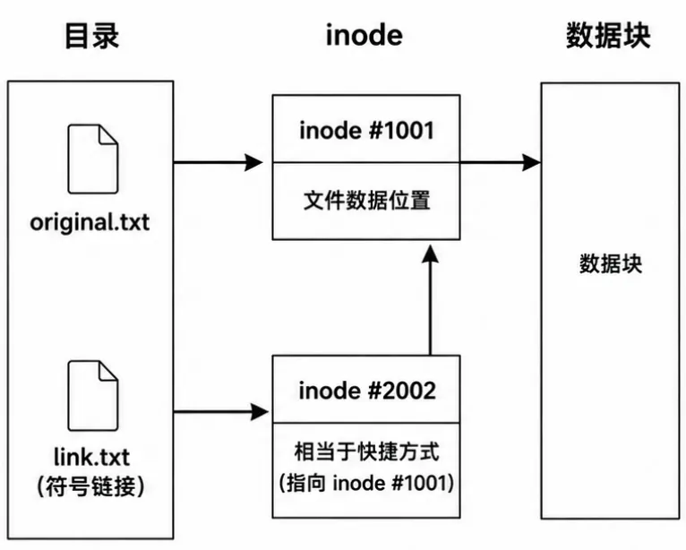
点击放大通过 ln 命令就能创建符号链接，目录和文件均可：ln -s 原对象 链接名
# 创建符号链接 link.txt 指向 original.txt
ln -s original.txt link.txt
# 创建符号链接 ~/project 指向 /data/project
ln -s /data/project ~/project需要注意的是，符号链接只相当于一个快捷方式，删除快捷方式当然不会影响原始文件，但是反过来删除（或移动）原始文件后，符号链接就会失效。
回到开头的场景，我们就可以放心地把数据先移走 mv /mnt/disk_a/project_data /mnt/disk_b，然后创建符号链接即可解决 ln -s /mnt/disk_b/project_data /mnt/disk_a/project_data。因为符号链接几乎不占存储空间，同时从程序眼里文件就仿佛真实地存在那里。
2.4.2 硬链接#
考虑以下场景：我希望两个“文件” /data/a.txt 和 /data/b.txt 的内容完全相同，并且无论编辑谁，都会同时作用于另一个文件，并且删除二者任意一个也不会影响另一个文件。假如没有最后一个删除限制，拿上面的符号链接就可以解决，但是如果要实现删除二者任意一个也不会影响另一个文件，得用到硬链接了。
硬链接和符号链接不同，它并不是一个“快捷方式”。创建硬链接后，两个文件名的地位完全相同，它们共同指向同一个 inode（文件数据节点），就仿佛两个 C 语言指针指向同一个对象。如图所示：
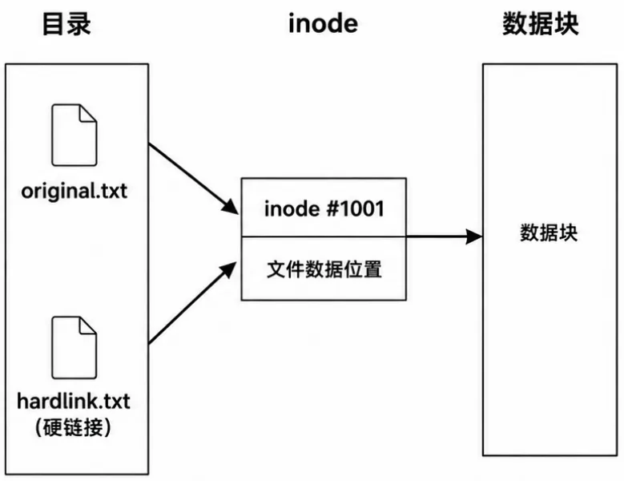
点击放大Linux 会记录一个 inode 被多少个文件名引用，这个数量称为链接数。创建上述硬链接后，链接数为 2；删除 original.txt 或 hardlink.txt 中任意一个后，链接数变成 1，文件数据仍然存在。只有两个文件名都被删除后，链接数才会归零，文件数据才会被删除。
通过 ln 命令也能创建硬链接，只有同文件系统的文件可以创建硬链接：ln 原对象 链接名
# 创建硬链接 link.txt 指向 original.txt
ln original.txt link.txt回到开头的场景，我们创建硬链接即可解决：ln /data/a.txt /data/b.txt。另外，硬链接是不会消耗多倍存储空间的，文件只会被存储一遍。
2.5 后台任务和终端复用器#
在一个 Shell 中，运行一个命令后它就独占了整个 Shell，如果这个命令很耗时，那此时就无法再运行第二个命令了。此时，我们有多种解决方案，分别是 Linux 传统的前后台任务机制以及更为强大易用的终端复用器。此外，本节还会提供“SSH 断开后运行的任务被终止”的解决方案。
2.5.1 传统后台任务管理#
需要承认的是，现在大家用的更多的还是终端复用器这种强大的工具，而不是传统的后台任务管理。但是为了教程完整性，我还是在这里简单分享一下。
（1）将前台任务挂到后台
假如运行了一个极为耗时的命令：
sleep 3600此时希望将其切到后台，让开 Shell，那么可以按键盘快捷键 Ctrl + Z。此时 Shell 会弹出提醒，代表着命令已经被挂到后台，同时已经被暂停了：
[1]+ Stopped sleep 3600如果我们希望在后台它继续运行，需要使用命令：
bg此时 Shell 会弹出提醒，代表挂到后台的任务重新开始在后台运行了：
[1]+ sleep 3600 &（2）直接新建后台任务
如果你已经知道一个命令很耗时，打算直接把它挂到后台，那么可以在命令的末尾添加 & 符号，代表直接新建后台任务：
sleep 1800 &此时，执行完命令后它就直接进入后台并继续运行了，不会占用 Shell，同时会弹出提醒：
[2] 21638（3）将后台任务取回前台
若要将后台任务取回前台，可以使用命令：
fg如果此时有多个后台任务，默认取回最近一个。也可以通过序号来指定，首先用命令列出所有后台任务：
jobs会以列表打印出所有后台任务和任务的状态：
[1] Running sleep 3600 &
[2]- Running sleep 1800 &
[3]+ Stopped sleep 2400然后使用 %序号 来指定要取回前台的后台任务：
fg %1 # 取回任务1
fg %2 # 取回任务2
fg %3 # 取回任务32.5.2 不被挂断的任务#
对于普通任务，当 SSH 或者 Shell 关闭时，任务都会收到来自 Shell 的 SIGHUP 信号而被终止。如果希望任务在 SSH 或者 Shell 关闭时继续正常运行，就需要 nohup 命令了。
在命令前添加 nohup 即可创建不被挂断的任务：
nohup python train.py如果希望直接创建不被挂断的后台任务，可以使用：
nohup python train.py &如果希望把任务的输出导出保存为文件，可以使用下面的写法（最常见的组合）：
nohup python train.py >train.log 2>&1 &
│ │ └─ 挂到后台
│ └────── 将 stderr 写入 stdout（即 train.log）
└───────────────── 将 stdout 写入 train.log2.5.3 终端复用器#
终端复用器融合了上面两节的功能，同时更加强大和易用。它不仅能实现多任务便捷地切换，还默认是不被挂断的。本节将介绍两个终端复用器工具分别是 screen 和 tmux，前者是经典老牌工具，后者是现代的更加强大的替代品，推荐直接学习 tmux，本文为了完整性也会介绍 screen。
（1）screen 工具
- 安装：
sudo apt install screen - 首先创建一个会话：
screen（可以起一个名字screen -S train） - 创建会话后默认就会进入该会话：
- 在会话中会有一个和普通 Shell 完全一样的终端，可以任意运行命令：
python train.py - 然后离开当前会话，相当于最小化，程序依然会运行：按快捷键 Ctrl + A，松开后再按 D
- 在会话中会有一个和普通 Shell 完全一样的终端，可以任意运行命令：
- 此时会回到原来的 Shell，
screen中的程序仍然继续运行 - 如果想重新进入会话，首先查看已有会话：
screen -ls - 然后指定会话名重新进入：
screen -r train
（2）tmux 工具
tmux 工具非常强大，是推荐使用的终端复用器。它有多层级的设计，能像浏览器一样，轻松实现切换标签、分屏等高级操作。不过为了教程精简，下面只分享最基础的功能，更多内容可以查看文章：
- 安装：
sudo apt install tmux - 首先创建一个会话：
tmux（可以起一个名字tmux new -s train） - 创建会话后默认就会进入该会话：
- 在会话中会有一个和普通 Shell 完全一样的终端，可以任意运行命令：
python train.py - 然后离开当前会话，相当于最小化，程序依然会运行：按快捷键 Ctrl + B，松开后再按 D
- 在会话中会有一个和普通 Shell 完全一样的终端，可以任意运行命令：
- 此时会回到原来的 Shell，
tmux中的程序仍然继续运行 - 如果想重新进入会话，首先查看已有会话：
tmux ls - 然后指定会话名重新进入：
tmux attach -t train（如果不指定会话名，默认进入上次使用的）
下面是一个 tmux 的使用示例：（该示例包含本文没有提到的功能，可以在上面的链接文章中了解）
2.6 系统资源查询#
Windows 有任务管理器来查看系统资源的使用情况，相同的，Linux 也有丰富的工具来查询和管理系统资源，本节将会介绍以下工具：
- 任务管理器（CPU、内存和进程）：
top,htop - 进程中止：
kill,pkill - 磁盘状态查看：
du,df,lsblk,iotop - 网络状态查看：
ifconfig,iftop,nload
2.6.1 任务管理器#
本节将会介绍查看管理 CPU、内存和进程的任务管理器 top 和 htop，前者是绝大多数 Linux 发行版都会自带的系统组件，后者需要手动安装，但是更为强大和好用。
（1）top 工具（table of processes）
使用 top 命令即可打开任务管理器，打开后用 q 或 Ctrl + C 退出。top 会占满终端并自动刷新，界面如下：
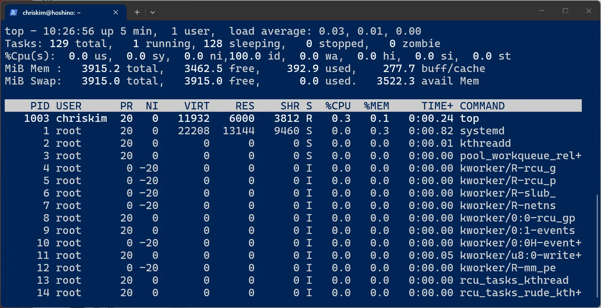
点击放大首先看到顶部的五行信息，格式如下：
top - 10:26:56 up 5 min, 1 user, load average: 0.03, 0.01, 0.00
当前时间；系统已运行时间；当前登录用户数；过去 1、5、15 分钟的平均负载
Tasks: 129 total, 1 running, 128 sleeping, 0 stopped, 0 zombie
进程总数；正在运行的进程数；休眠进程数；已停止进程数；僵尸进程数
%Cpu(s): 0.0 us, 0.0 sy, 0.0 ni, 100.0 id, 0.0 wa, 0.0 hi, 0.0 si, 0.0 st
用户进程占用；内核占用；调整过 nice 的进程占用；CPU 空闲；等待 I/O；硬件中断；软件中断；被虚拟机宿主机占用
MiB Mem : 3915.2 total, 3462.5 free, 392.9 used, 277.7 buff/cache
物理内存总量；空闲内存；已使用内存；缓冲区和缓存
MiB Swap: 3915.0 total, 3915.0 free, 0.0 used, 3522.3 avail Mem
Swap 总量；Swap 空闲；Swap 已使用；预计可用物理内存除了显示当前系统的状态外，top 还能显示和管理进程，这就是下面的表格显示的内容。首先看到表头，每一列的含义是：
- PID – 进程编号
- USER – 启动该进程的用户
- PR – 进程调度优先级，数值越小优先级越高
- NI – 进程 nice 值，数值越小优先级越高
- VIRT – 虚拟内存总量
- RES – 实际驻留在物理内存中的大小
- SHR – 共享内存大小
- S – 进程状态：R 运行，S 可中断睡眠，D 不可中断睡眠，T 已暂停，Z 僵尸进程，I 空闲内核线程
- %CPU – CPU 使用率
- %MEM – 物理内存使用率
- TIME+ – 进程累计占用 CPU 的时间
- COMMAND – 进程对应的命令或程序名
然后我们就可以用 ↑ ↓ 和 PGUP PGDN，来滚动和翻页整个表格了，除此之外，还可以输出大写 P 以 CPU 占用排序，输入大写 M 以内存占用排序。
（2）htop 工具
htop 相当于加强版的 top，它的界面更美观易用，同时功能也更强大，一般来说我更喜欢用 htop。首先安装它：sudo apt install htop -y
使用 htop 命令即可打开任务管理器，打开后用 q 或 Ctrl + C 退出。htop 会占满终端并自动刷新，界面如下：
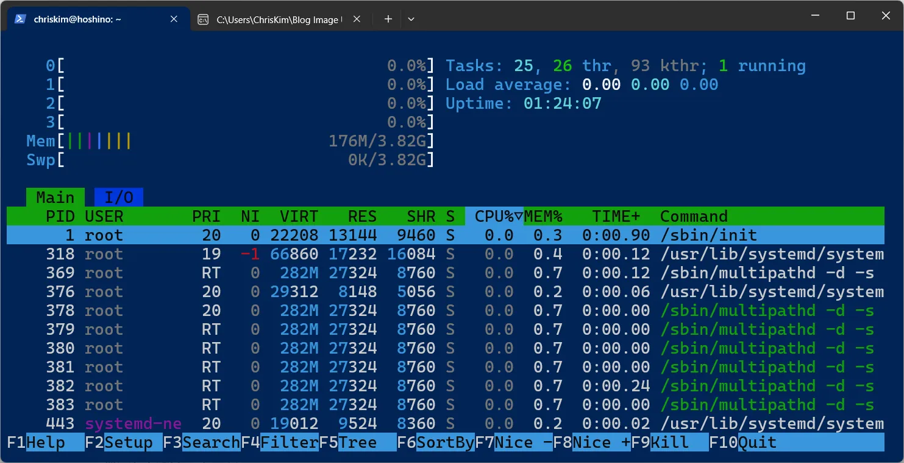
点击放大可以发现，htop 最明显的区别就是界面更美观了，还有一个区别就是 htop 不仅可以纯键盘操作，还可以用鼠标操作。例如可以用滚轮来滚动进程列表，点击表头可以切换排序列以及排序方向，点击下方的按钮可以选择功能。
因此 htop 的使用难度就很低了，这里简单介绍一下两个我常用的功能：
- 搜索：按 F3 或者鼠标点击 Search 按钮，接着就可以用关键字搜索进程了。
- 中止：高亮选中一行进程后按 F9 或者鼠标点击 Kill 按钮，会进入信号发送界面，选择 15 SIGTERM 发送来请求中止进程，或者发送 9 SIGKILL 来强制中止进程。
2.6.2 进程中止#
上一节介绍的 htop 已经有中止进程的功能了，不过 Linux 自身也有专门的命令。
（1）kill 命令：杀死指定 ID 进程
使用 kill 进程ID 来杀死进程，进程 ID 可以通过 top 或者 htop 查到。
kill 默认发送 SIGTERM 即请求中止进程，如果进程已经完全卡死不响应，可以发送 SIGKILL 来强制中止进程，使用 kill -9 进程ID
（2）pkill 命令：杀死指定正则表达式的进程
使用 pkill 正则表达式 来杀死进程，所有进程名匹配上正则表达式的进程都会被一起杀死，因此可能一次杀多个。
pkill 默认匹配进程名，如果想匹配完整的启动命令，可以使用 -f 参数，例如：pkill -f "python.*train.py"
同样，pkill 默认发送 SIGTERM 即请求中止进程，如果进程已经完全卡死不响应，可以发送 SIGKILL 来强制中止进程，使用 pkill -9 正则表达式
2.6.3 磁盘状态查看#
（1）du 命令：查询对象磁盘占用
du（disk usage）用于查看文件或目录实际占用了多少磁盘空间。
-s 参数表示只显示汇总结果，不每行列出所有对象的大小，-h 参数让容量自动使用 KB、MB、GB 等易读单位。du -sh 的调用方式基本上是最常用的固定搭配：
du -sh /var/log # 查看一个目录的总大小
du -sh /var/log/* # 查看一个目录下所有对象的大小（2）df 命令：查询文件系统空间
df（disk free）用于查看已经挂载的文件系统还有多少可用空间。因此，一块尚未挂载的磁盘或分区不会出现在 df 中。
-h 参数让容量自动使用 KB、MB、GB 等易读单位，因此最常使用的是：
df -h输出类似：
Filesystem Size Used Avail Use% Mounted on
/dev/sda2 100G 42G 53G 45% /
/dev/sdb1 1.8T 1.2T 550G 69% /data每一列分别是：
- Filesystem – 文件系统位置
- Size – 总容量
- Used – 已使用空间
- Avail – 可用空间
- Use% – 使用率
- Mounted on – 挂载位置
（3）lsblk 命令：查询磁盘和分区
lsblk（list block devices）用于查看计算机中的磁盘、分区以及它们的挂载关系。因此，即使是空盘，它也会出现在 lsblk 里。使用：
lsblk输出类似：
NAME MAJ:MIN RM SIZE RO TYPE MOUNTPOINTS
sda 8:0 0 500G 0 disk
├─sda1 8:1 0 1G 0 part /boot
└─sda2 8:2 0 499G 0 part /
sdb 8:16 0 2T 0 disk
└─sdb1 8:17 0 2T 0 part /data其中重要的列有：
NAME– 设备名称SIZE– 容量TYPE– 类型，例如disk为整块磁盘，part为分区MOUNTPOINTS– 挂载位置
例如上面的 /dev/sda 是一块 500 GB 磁盘，其中包含 sda1 和 sda2 两个分区。
（4）iotop 工具：查询磁盘 I/O
有时候磁盘空间并没有满，但系统仍然非常卡，这可能是某个程序正在大量读写磁盘。此时可以使用 iotop 查看各进程的磁盘读写情况。
首先安装：
sudo apt install iotop -y然后运行：
sudo iotop它的使用方式和 top 类似，会实时显示各进程的磁盘读写速度。其中主要关注：
DISK READ– 磁盘读取速度DISK WRITE– 磁盘写入速度COMMAND– 对应的程序
按方向键可以导航，按 q 可以退出。
2.6.4 网络状态查看#
（1）ifconfig 命令：查询网络接口
ifconfig 可以查看计算机的网络接口、IP 地址以及网络流量等信息。
首先安装：
sudo apt install net-tools然后运行：
ifconfig可能会看到：
eth0: flags=4163<UP,BROADCAST,RUNNING,MULTICAST> mtu 1500
inet 192.168.1.100 netmask 255.255.255.0
inet6 fe80::1234:5678:abcd:ef01 prefixlen 64
RX packets 123456 bytes 987654321
TX packets 65432 bytes 123456789这里最常关注的是：
eth0– 网络接口名称（一般物理网口以eth,ens,eno,enp开头）inet– IPv4 地址和子网掩码inet6– IPv6 地址和前缀长度RX– 接收的数据包累计数量和累计大小TX– 发送的数据包累计数量和累计大小
另外，ifconfig 是比较经典的工具，现在较新的 Linux 系统主要使用 ip 命令代替它，使用 ip addr 命令的效果和 ifconfig 类似。
（2）iftop 工具：查询网络连接流量
如果想知道“到底是哪个远程地址正在占用网络”，可以使用 iftop。
首先安装：
sudo apt install iftop -y然后运行：
sudo iftopiftop 会实时显示本机与其他地址之间的网络连接以及对应流量，因此比较适合排查：
- 哪个服务器正在大量传输数据
- 当前主要连接到了哪些地址
- 哪条网络连接占用了最多带宽
如果计算机有多个网卡，可以指定网络接口：
sudo iftop -i eth0按 q 退出。
（3）nload 工具：查询网卡总流量
如果并不关心具体是哪个连接，只想看看当前总下载和上传速度，那么 nload 会更加直观。
首先安装：
sudo apt install nload -y然后运行：
nload界面中会分别显示：
Incoming
当前下载速度
Outgoing
当前上传速度如果计算机存在多个网络接口，可以使用 ← 和 → 切换。按 q 退出。
2.6.5 GPU 状态查看（AI / 计算服务器常用）#
如果你使用的是配备了 NVIDIA 显卡的 AI 训练或推理服务器，除了 CPU 和内存，最常需要关注的还有显存（VRAM）与 GPU 利用率：
nvidia-smi：查看显卡型号、驱动/CUDA 版本、温度、显存占用以及正在占用显存的进程PID。如果遇到显存爆满但任务已经卡死，可以直接记下对应PID后用kill -9 PID释放显存。watch -n 1 nvidia-smi：每隔 1 秒自动刷新一次 GPU 状态，训练或推理时非常方便。nvtop：类似htop的交互式 GPU 监控面板（可通过sudo apt install nvtop安装），支持直观的折线图和多卡对比。
nvidia-smi # 查看一次当前 GPU 与显存状态
watch -n 1 nvidia-smi # 每秒动态刷新 GPU 状态2.7 磁盘挂载#
2.7.1 挂载的含义#
对于 Windows 用户来说，挂载是很陌生的概念。因为 Windows 如果接入了新磁盘，格式化后就直接显示为新盘符了（例如 E:\ 盘）。
但对于 Linux，没有盘符这个概念，整个系统只有唯一的一棵树，每个磁盘相当于挂在整个树的某个节点下，这就是为什么我们需要挂载磁盘。
看到下图示例，假如一台计算机有两块磁盘分别为 A 和 B，我们可以让 A 磁盘存储根目录，称为系统盘，可以让 B 磁盘仅存储用户的用户文件，成为用户盘。那么，就可以将 B 磁盘的文件系统挂载到 /home 目录下，这样，所有存储在 /home 目录里面的内容，实际写入的磁盘是 B，而其他的目录均写入磁盘 A。
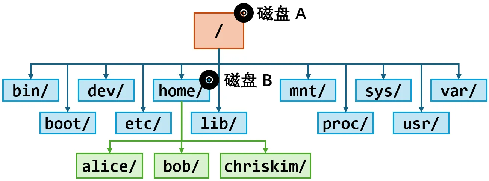
点击放大本节主要介绍的是可移动设备（例如 U 盘、移动硬盘）的挂载和卸载，对于系统安装了新磁盘，要进行分区、格式化并配置自动挂载，我认为已经较为深入，不适合在本章介绍。
2.7.2 挂载磁盘#
对于带桌面环境的 Linux，例如 Ubuntu Desktop，插入 U 盘或移动硬盘后通常会自动挂载，因此一般不需要手动操作。但在服务器 Linux 中，系统通常只会识别设备，而不会自动挂载。
插入设备后，可以先使用前面介绍过的 lsblk 查看，例如：
NAME SIZE TYPE MOUNTPOINTS
sda 500G disk
└─sda1 500G part /
sdb 64G disk
└─sdb1 64G part这里 /dev/sda1 已经挂载到根目录 /，而新插入的 /dev/sdb1 的 MOUNTPOINTS 为空，说明它还没有挂载。
注意，通常需要挂载的是磁盘中的分区，例如 /dev/sdb1，而不是整块磁盘 /dev/sdb。
首先创建一个目录作为挂载位置：
sudo mkdir -p /mnt/usb然后使用 mount：
sudo mount /dev/sdb1 /mnt/usb此时正常来说就完成了挂载，ls /mnt/usb 看到的就是 /dev/sdb1 文件系统里面的内容，向 /mnt/usb 写入文件也会实际写入这块磁盘。
可以再次使用 lsblk 确认挂载结果：
NAME SIZE TYPE MOUNTPOINTS
sda 500G disk
└─sda1 500G part /
sdb 64G disk
└─sdb1 64G part /mnt/usb除了 /mnt/usb 外，挂载位置本身没有特殊要求，只要是一个存在的目录即可。例如：
sudo mkdir -p /data/backup
sudo mount /dev/sdb1 /data/backup需要注意，如果把文件系统挂载到一个原本已经存在文件的目录上，那么这个目录原来的文件并不会被删除，但在挂载期间会暂时看不到。因此一般建议使用专门创建的空目录作为挂载点。
2.7.3 卸载磁盘#
移动设备在拔出之前，最好先进行卸载，否则还有尚未真正写入磁盘的数据时，直接拔出可能导致数据丢失或文件系统损坏。
使用 umount 命令卸载（注意命令叫做 umount，而不是 unmount）：
sudo umount /mnt/usb # 可以指定挂载点
sudo umount /dev/sdb1 # 也可以指定设备卸载完成后再次运行：
lsblk可以看到 /dev/sdb1 仍然存在，但是 MOUNTPOINTS 已经为空：
NAME SIZE TYPE MOUNTPOINTS
sdb 64G disk
└─sdb1 64G part这时就可以安全拔出设备了。
如果卸载时提示 target is busy，说明还有程序正在使用这个挂载目录。例如当前 Shell 正好位于 /mnt/usb 中，也会导致无法卸载。
2.8 环境变量#
在 Linux 的安装教程、软件配置和开发环境中，经常可以看到下面这样的命令：
export PATH="/opt/myapp/bin:$PATH"
export LD_LIBRARY_PATH="/opt/myapp/lib:$LD_LIBRARY_PATH"
export CUDA_VISIBLE_DEVICES=0,1,2,3这些命令都与环境变量有关。本节将简单介绍环境变量是什么，并重点介绍两个非常常见的特殊环境变量：PATH 和 LD_LIBRARY_PATH。
2.8.1 变量和环境变量#
我们在前文已经接触过 Shell 变量，例如：name="Chris"
变量可以临时保存一段数据，使用 $变量名 可以读取变量的值：echo $name
但普通 Shell 变量默认只属于当前 Shell。从当前 Shell 启动其他程序时，这些程序并不会自动获得普通变量。
如果希望变量能够传递给当前 Shell 启动的程序，可以使用 export 将其导出为环境变量：
name="Chris"
export name也可以在声明时直接导出：
export name="Chris"简单理解：
- 普通变量：主要供当前 Shell 自己使用。
- 环境变量：除了当前 Shell 可以使用，还会传递给它启动的子进程。
可以使用 env 查看当前环境中的所有环境变量：
env环境变量的用法和普通 Shell 变量类似，1.7.4 已经讲过。不过有一个用法需要注意，环境变量既可以设置到当前 Shell 的环境中（重启 Shell 后失效），并传递给之后启动的子进程，也可以临时仅给某个命令使用。临时使用的语法为：
MY_ENV=my-env-value 要运行的命令例如在 Python 人工智能训练中极为常见的指定计算卡的用法，就是临时设定的环境变量：
CUDA_VISIBLE_DEVICES=0 python train.py2.8.2 特殊环境变量——PATH#
PATH 是 Linux 中最重要的环境变量之一，它决定了 Shell 去哪些目录寻找命令。
使用 echo $PATH 查看当前的 PATH，将会显示一个使用 : 分隔的目录列表，例如：
/usr/local/sbin:/usr/local/bin:/usr/sbin:/usr/bin:/sbin:/bin:/usr/games:/usr/local/games:/snap/bin下面介绍 PATH 变量到底有什么用。假如执行命令 ls，我们并没有告诉 Shell ls 程序具体位于哪里。此时 Shell 就会按照 PATH 中的顺序，到这些目录中寻找名为 ls 的可执行程序。
可以使用 which 查看某个命令实际对应的位置：which ls。一般来说会输出：/usr/bin/ls。即 Shell 通过遍历 PATH 后，在 /usr/bin/ls 找到了 ls 命令。
如果要新增一个 PATH 目录，可以用下面的命令。请注意一定不要覆盖 PATH，而是用冒号拼接，因为如果直接覆盖 PATH 会导致其他大多数命令 Shell 全部都找不到了。
export PATH="/opt/myapp/bin:$PATH"另外，PATH 中越靠前的目录优先级越高。如果不同目录中存在同名命令，Shell 通常会优先找到排在前面的那个。
2.8.3 特殊环境变量——LD_LIBRARY_PATH#
很多 Linux 程序并不是把所有功能都包含在自己的可执行文件中，而是运行时还需要加载一些动态链接库。当程序运行时，Linux 的动态链接器需要找到这些库文件，否则就会因为缺失库而运行失败。这类动态链接库文件通常以 .so 结尾，例如：
libexample.so
libexample.so.1如果说上一节的 PATH 是告诉 Shell 到哪些目录寻找可执行程序，那么 LD_LIBRARY_PATH 就是告诉动态链接器到哪些额外目录寻找动态链接库。
可以查看当前设置：echo $LD_LIBRARY_PATH
假如某个程序需要的动态链接库位于：/opt/myapp/lib
可以执行下面的命令，另外也注意一定不要直接覆盖原环境变量了。
export LD_LIBRARY_PATH="/opt/myapp/lib:$LD_LIBRARY_PATH"正确设置 LD_LIBRARY_PATH 后，程序就可能正常找到对应的库。
如果你好奇一个程序依赖哪些动态链接库，以及这些库最终从哪里加载，可以使用 ldd 查看：
ldd /usr/bin/ls例如会看到类似：
linux-vdso.so.1 (0x00007ffc0fdc4000)
libselinux.so.1 => /lib/x86_64-linux-gnu/libselinux.so.1 (0x0000773b85560000)
libc.so.6 => /lib/x86_64-linux-gnu/libc.so.6 (0x0000773b85200000)
libpcre2-8.so.0 => /lib/x86_64-linux-gnu/libpcre2-8.so.0 (0x0000773b854c6000)
/lib64/ld-linux-x86-64.so.2 (0x0000773b855ba000)与 PATH 类似，LD_LIBRARY_PATH 中也可以包含多个目录，使用 : 分隔，并且靠前的目录具有更高的查找优先级：
export LD_LIBRARY_PATH="/path/a:/path/b:$LD_LIBRARY_PATH"2.9 Bash 配置文件 .bashrc#
在前面的内容中，我们已经接触过环境变量、命令别名等配置。不过如果只是在终端中直接执行 export PATH="/opt/myapp/bin:$PATH"，那么这些修改通常只对当前 Shell 生效，关闭终端后就会消失。
如果希望某些配置每次打开 Bash 时都自动生效，就可以把它们写进 Bash 的配置文件 .bashrc。
2.9.1 .bashrc 是什么#
.bashrc 是 Bash 常用的用户级配置文件，一般位于当前用户的家目录 ~/.bashrc，它的文件名以 . 开头，因此它属于隐藏文件，可以使用 ll 别名或者 ls -al 查看它。
.bashrc 本质上就是一份 Shell 脚本。每次启动交互式 Bash 时，Bash 通常会读取并执行其中的内容。因此，平时可以直接在 Bash 中执行的很多配置命令，也可以写进 .bashrc，让它们以后自动执行。
可以使用文本编辑器打开来修改：nano ~/.bashrc
2.9.2 .bashrc 常用来干什么#
（1）长期保存环境变量
例如前文介绍过，如果希望将 /opt/myapp/bin 加入 PATH，直接在终端中执行时，只对当前 Shell 生效。如果把这一行加入 ~/.bashrc（位置一般不重要，加到末尾即可）：
export PATH="/opt/myapp/bin:$PATH"那么之后每次打开 Bash 时都会自动执行这条命令。
类似地，也可以设置其他环境变量，例如自己装过 CUDA 的读者肯定有印象：
export PATH=$PATH:/usr/local/cuda/bin
export LD_LIBRARY_PATH=$LD_LIBRARY_PATH:/usr/local/cuda/lib64（2）设置命令别名
本文非常前面就已经提到了别名，现在终于可以学习自己设定了。别名可以给一个较长的命令取一个更短的名字，例如：
alias ll='ls -alF'之后执行 ll 就相当于执行 ls -alF
也可以按照自己的使用习惯添加别名，例如我自己的个人习惯是把 conda 几个命令设定别名：
alias cac="conda activate"
alias cda="conda deactivate"直接在 Shell 中执行 alias 同样只是临时生效，写入 .bashrc 后，每次打开 Bash 都会自动创建这些别名。
（3）基于脚本语法的功能
实际上，因为 .bashrc 本质上就是 Shell 脚本，所以也可以在里面执行普通命令。例如：
echo "Welcome back!"那么以后每次打开对应的 Bash 时，都可能看到这段文字。
因此，你完全可以通过 Shell 脚本的语法，实现一些很酷的事情。例如我就在 .bashrc 里注册了一个用来切换 CUDA 版本的函数，每次调用这个函数它就会帮我切换想要的 CUDA 版本，这个玩法之前我已经写过文章了，感兴趣可以查看：《5.2 Linux 系统 CUDA 多版本共存以及切换》（已合并至本页，点击直达）
不过一般建议 .bashrc 主要用于 Shell 配置，不要在里面加入耗时很长、需要用户输入或者会产生大量输出的命令，否则每次打开 Shell 都会受到影响。
2.9.3 重新加载 .bashrc#
修改 .bashrc 后，新打开的 Bash 通常会读取新的配置，因此最简单的方法是关闭并重新打开终端。如果不想重新打开终端，也可以让当前 Bash 立即重新执行 .bashrc：
source ~/.bashrc # 完整形式
. ~/.bashrc # 简写形式了解到这里，如果用过 Python 的虚拟环境 venv，应该就能理解 source xxx/bin/activate 在做什么了：它让当前 Bash 执行虚拟环境的激活脚本，从而修改 PATH 等环境变量，让 python 等命令指向虚拟环境中的版本。
2.10 拾遗补缺#
本节补充几个非常实用、但内容比较少，不值得单独开一节介绍的命令。
2.10.1 watch：重复执行命令#
watch 可以每隔一段时间（默认 2 秒）重复执行某个命令，并不断刷新终端中的显示结果，需要退出时按 Ctrl + C。示例如下：
watch nvidia-smi # 每隔 2 秒查看一次 GPU 状态
watch -n 1 nvidia-smi # 每隔 1 秒查看一次 GPU 状态
watch -n 1 du -sh ./output # 每隔 1 秒查看一次 output 目录多大2.10.2 tee：同时输出到终端和文件#
前文介绍过使用 > 将命令输出重定向到文件：
ls > files.txt这样输出会直接进入文件，不再显示在终端中。
如果希望一边在终端中看到输出，一边把相同内容保存到文件，可以使用 tee：
ls | tee files.txt此时 ls 的输出既会显示在终端，也会写入 files.txt。如果要追加，可以给 tee 加上 -a 参数。
2.10.3 diff：比较文件差异#
diff 可以比较两个文件的内容差异：
diff old.txt new.txt如果两个文件完全相同，通常不会输出任何内容；如果存在差异，则会显示发生变化的位置和内容。
更常见、也更容易阅读的是统一格式：
diff -u old.txt new.txt输出中：
- 以
-开头的内容表示旧文件中的内容 - 以
+开头的内容表示新文件中的内容
例如：
-Hello
+Hello World表示原来的 Hello 被修改成了 Hello World。
2.10.4 uname：查看系统和内核信息#
uname 用于查看当前系统的一些基本信息。
直接执行 uname 一般会输出 Linux，即内核名称。通常我们使用 -a 参数打印出完整信息，这样更实用，执行 uname -a 后，我手上的 Ubuntu 24.04 LTS 输出以下内容：
Linux hoshino 6.8.0-137-generic #137-Ubuntu SMP PREEMPT_DYNAMIC Fri Jul 17 20:28:23 UTC 2026 x86_64 x86_64 x86_64 GNU/Linux一次性输出了内核名称、计算机名、内核版本、内核编译信息、硬件架构等信息。
需要注意，uname 主要显示的是内核和硬件架构相关信息，并不能直接告诉你当前使用的是 Ubuntu、Debian 还是其他 Linux 发行版。如果想查看当前 Linux 发行版的信息，可以查看 /etc/os-release 文件：
cat /etc/os-release例如我手上的 Ubuntu 内容如下：
PRETTY_NAME="Ubuntu 24.04.3 LTS"
NAME="Ubuntu"
VERSION_ID="24.04"
VERSION="24.04.3 LTS (Noble Numbat)"
VERSION_CODENAME=noble
ID=ubuntu
ID_LIKE=debian
HOME_URL="https://www.ubuntu.com/"
SUPPORT_URL="https://help.ubuntu.com/"
BUG_REPORT_URL="https://bugs.launchpad.net/ubuntu/"
PRIVACY_POLICY_URL="https://www.ubuntu.com/legal/terms-and-policies/privacy-policy"
UBUNTU_CODENAME=noble
LOGO=ubuntu-logo2.10.5 常见误触快捷键和恢复方式#
在终端中，一些快捷键可能因为误触导致看起来“卡住”或任务突然暂停：
Ctrl + S：触发终端软件流控制，暂停终端输出。按Ctrl + Q恢复。Ctrl + Z：暂停当前前台任务。执行fg可以恢复到前台继续运行。Ctrl + C：中断当前前台任务。通常无法恢复，只能重新运行命令。Ctrl + D：发送输入结束（EOF）。在空命令行中可能导致 Shell 退出，重新打开终端或重新连接 SSH 即可。
PART 03常见需求与工具进阶图谱 · 按需探索#
前两章已经介绍了日常使用 Linux 所需的大部分基础知识。不过 Linux 能做的事情远不止这些，并且有些功能极为强大和复杂，可能单独写都能超过本篇的长度。
因此，本章不再详细教学，而是介绍一些常见的进阶需求，以及解决这些需求时通常需要使用的工具或系统功能。以后真正遇到相关需求时，可以根据本章提供的关键词自行搜索和学习。
3.1 系统服务管理#
如果希望一个程序长期在后台运行、开机自动启动，或者程序崩溃后自动重新启动，通常需要将它配置成一个系统服务。
现代 Ubuntu 等 Linux 发行版主要使用 systemd 管理系统服务，最常用的工具是：
systemctl：启动、停止、重启和查看服务systemd service：定义一个系统服务systemctl enable：设置开机自动启动
需要注意，很多旧教程会使用 service、init.d 等方式管理服务，现在仍可能看到，但现代 Linux 通常以 systemd 为主。
3.2 系统日志和故障排查#
如果某个服务启动失败、系统突然重启、硬件出现异常，第一件事通常应该是查看日志。
常见工具和位置包括：
journalctl：查看 systemd 收集的系统和服务日志dmesg：查看 Linux 内核产生的信息，硬件和驱动故障排查中非常常用/var/log：传统日志文件所在目录
3.3 定时和自动执行任务#
如果希望 Linux 在指定时间自动执行某个命令，例如：
- 每天凌晨自动备份
- 每小时执行一次脚本
- 每周自动清理文件
可以了解：
cron/crontab：经典的 Linux 定时任务工具systemd timer：systemd 提供的定时任务机制at：在未来某个时间只执行一次任务
简单的周期任务使用 cron 非常常见，而已经使用 systemd 管理的服务通常也可以搭配 systemd timer。
3.4 Shell 脚本和自动化#
如果发现自己经常需要连续执行相同的一组 Linux 命令，就可以考虑把这些命令写成 Shell 脚本。
Shell 脚本可以进一步实现：
- 顺序执行多个命令
- 条件判断
- 循环
- 函数
- 接收命令行参数
- 根据上一条命令是否成功决定下一步操作
Shell 脚本非常适合简单的系统管理和自动化任务，但如果逻辑逐渐变得复杂，使用 Python 等更加完整的编程语言通常会更容易维护。
3.5 网络配置和排障#
网络问题种类很多，不同问题通常需要不同工具：
ifconfig/ip addr：查看网络接口和 IP 地址ip route：查看和管理路由ping：测试目标是否能够连通ss：查看网络连接和监听端口dig/nslookup：查询 DNStraceroute/tracepath：查看数据包经过的网络路径tcpdump：抓取和分析网络数据包nmap：探测网络中的主机和开放端口
3.6 防火墙#
如果希望限制哪些网络连接能够进入或离开 Linux 系统，就需要配置防火墙。
常见工具包括：
ufw：Ubuntu 中非常易用的防火墙管理工具nftables：现代 Linux 内核主要使用的底层防火墙框架iptables：旧教程中非常常见的防火墙工具
对于普通 Ubuntu 服务器，通常可以先学习 ufw；需要复杂规则、路由器或高级网络配置时，再了解 nftables。
配置远程服务器防火墙时需要特别小心。例如通过 SSH 连接服务器时，如果错误地禁止了 SSH 使用的端口，就可能把自己挡在服务器外面。
3.7 SSH 安全性#
前文已经介绍了使用用户名和密码通过 SSH 登录服务器。实际长期使用服务器时，更推荐进一步了解 SSH 密钥认证。
相关工具和配置包括：
ssh-keygen：生成 SSH 密钥ssh-copy-id 用户名@服务器地址：一键将本地公钥上传并写入服务器的authorized_keys，快速完成免密登录配置~/.ssh/authorized_keys：服务器允许登录的公钥~/.ssh/config：客户端 SSH 配置/etc/ssh/sshd_config：SSH 服务端配置PasswordAuthentication：控制密码认证PermitRootLogin：控制 root 远程登录
使用 SSH 密钥后，不仅可以避免反复输入密码，在正确配置的情况下安全性也通常更高。
修改 SSH 服务端配置时，需要确保新的登录方式已经测试成功，再关闭原有登录方式，否则可能导致自己无法再次连接服务器。
3.8 高级文件同步#
前文介绍的 scp 很适合简单地复制文件，但如果需要经常同步大型目录、备份数据或只传输发生变化的文件，可以进一步学习 rsync。
rsync 可以进行本地同步，也可以通过 SSH 在不同计算机之间同步文件，并且可以只传输发生变化的数据。
常见需求包括：
- 服务器之间同步数据
- 增量备份目录
- 上传大型数据集
- 保持两个目录内容一致
3.9 磁盘、分区和文件系统#
前文只介绍了磁盘的查看和临时挂载。如果需要安装新硬盘、重新分区或者配置长期挂载，还需要了解更多磁盘管理工具：
lsblk：查看磁盘和分区blkid：查看文件系统类型、UUID 等信息fdisk/parted：管理磁盘分区mkfs：创建文件系统，也就是常说的“格式化”/etc/fstab：配置开机自动挂载smartctl：读取硬盘 SMART 健康信息
常见文件系统有 ext4、XFS、Btrfs，进一步还可以了解 LVM 和 ZFS。
这一部分尤其需要谨慎。分区、格式化和文件系统操作可能直接导致数据丢失，执行命令前一定要确认操作对象对应的是哪块磁盘。
3.10 用户和权限的高级功能#
前文介绍的所有者、用户组和 rwx 权限已经足够应对大部分普通场景。如果需要更精细的权限控制，还可以了解：
umask：控制新建文件和目录的默认权限- ACL：为特定用户或组单独设置权限
getfacl/setfacl：查看和修改 ACL/etc/sudoers/visudo：精细控制用户可以通过 sudo 执行哪些操作setuid/setgid/ sticky bit：特殊权限位- Linux capabilities：只授予程序一部分原本属于 root 的能力
3.11 硬件和驱动#
如果需要查看 Linux 识别到了哪些硬件，或者排查设备和驱动问题，可以了解：
lspci：查看 PCI / PCIe 设备lsusb：查看 USB 设备lscpu：查看 CPU 信息dmidecode：查看 BIOS、内存、主板等 DMI 信息lsmod：查看当前已经加载的内核模块modprobe：加载或卸载内核模块dmesg：查看内核和驱动产生的信息
3.12 容器与环境隔离#
在服务器上部署开源项目、Web 服务或 AI 模型时，经常会遇到不同项目依赖的 Python 版本、系统库甚至 CUDA 版本互相冲突的问题。此时通常使用环境隔离或容器化方案解决：
Docker/Docker Compose：将程序及其所有系统依赖打包进独立容器，做到“一次构建，处处运行”，是目前部署开源项目与 AI 服务最主流的方式venv/uv：轻量的 Python 虚拟环境管理工具（uv速度极快，逐渐成为现代 Python 项目的首选）conda/mamba：科学计算与深度学习领域广泛使用的环境管理工具，擅长管理复杂的二进制依赖与多版本 Python
日常接触开源仓库时，如果项目提供了 Dockerfile 或 docker-compose.yml，优先使用 Docker 部署往往能避开绝大多数“环境配不通”的坑。
PART 04高频命令速查表（Cheat Sheet）随时速查 · 实战手册#
正如教程开头所说：不用刻意死记硬背命令，忘记具体参数时直接来这里按场景检索，或随时点击顶部栏的「命令速查」按钮一键呼出可筛选、可复制的速查面板。
目录与文件导航#
| 命令 / 快捷键 | 核心用途 | 对应章节 |
|---|---|---|
pwd | 显示当前所在工作目录的绝对路径 | 查看详解 |
cd <目录> | 切换目录（cd ~ 回用户家目录，cd - 返回上次目录，cd .. 上一级） | 查看详解 |
ls -lah | 以人类可读大小列出全部文件（含隐藏文件与权限详情） | 查看详解 |
mkdir -p a/b/c | 递归创建多级目录 | 查看详解 |
touch file.txt | 新建空文件或更新文件修改时间 | 查看详解 |
find <路径> -name "*.log" | 按文件名通配符递归查找文件 | 查看详解 |
复制、移动、删除与链接#
| 命令 / 快捷键 | 核心用途 | 对应章节 |
|---|---|---|
cp -r 源目录 目标目录 | 递归复制目录及其全部内容 | 查看详解 |
mv 源路径 目标路径 | 移动文件/目录，或在同一目录下重命名 | 查看详解 |
rm -ri <目录> | 交互式递归删除（逐项确认，防止误删） | 查看详解 |
ln -s 真实目标 软链接路径 | 创建符号链接（软链接，强烈建议使用绝对路径） | 查看详解 |
文本查看、编辑与搜索#
| 命令 / 快捷键 | 核心用途 | 对应章节 |
|---|---|---|
cat <文件> | 直接输出小型文本文件的全部内容 | 查看详解 |
less <文件> | 分页浏览大文件（/关键词 搜索，n 下一个，q 退出） | 查看详解 |
head -n 20 / tail -f <日志> | 查看文件前 20 行 / 实时追踪日志最新输出 | 查看详解 |
nano <文件> / vim <文件> | 新手友好终端编辑器 / 高效模式化编辑器（:wq 保存退出，:q! 强制退出） | 查看详解 |
grep -rn "关键词" <目录> | 递归搜索文本内容并显示行号 | 查看详解 |
wc -l <文件> | 统计文件行数（常与管道 | 搭配统计条数） | 查看详解 |
sed -i 's/旧/新/g' <文件> | 原地批量替换文件中的文本 | 查看详解 |
diff -u 文件A 文件B | 对比两个文本文件的差异 | 查看详解 |
用户、权限与软件包#
| 命令 / 快捷键 | 核心用途 | 对应章节 |
|---|---|---|
sudo <命令> | 以管理员（root）权限执行单条命令 | 查看详解 |
chmod 755 <文件或目录> | 修改对象读写执行权限（chmod +x 添加可执行权限） | 查看详解 |
chown -R 用户:组 <目录> | 递归修改目录所有者与所属用户组 | 查看详解 |
sudo apt update && sudo apt install <包名> | 更新软件源索引并安装软件包（Ubuntu/Debian） | 查看详解 |
sudo apt upgrade / autoremove | 升级已安装软件 / 清理无用依赖 | 查看详解 |
网络下载与打包压缩#
| 命令 / 快捷键 | 核心用途 | 对应章节 |
|---|---|---|
wget -c <URL> | 下载文件并支持断点续传 | 查看详解 |
curl -LO <URL> | 跟随重定向并以原文件名下载 | 查看详解 |
aria2c -x 16 -s 16 <URL> | 多线程高速下载大文件 | 查看详解 |
tar -czvf 包名.tar.gz 目录/ | 打包并使用 gzip 压缩目录 | 查看详解 |
tar -xzvf 包名.tar.gz -C 目标/ | 解压 .tar.gz 压缩包到指定目录 | 查看详解 |
zip -r 包名.zip 目录/ && unzip 包名.zip | 创建与解压 zip 压缩包 | 查看详解 |
后台任务、进程与硬件监控#
| 命令 / 快捷键 | 核心用途 | 对应章节 |
|---|---|---|
tmux new -s train | 创建名为 train 的持久终端会话（断网不中断任务） | 查看详解 |
tmux ls / tmux attach -t train | 查看所有 tmux 会话 / 重新连接回指定会话 | 查看详解 |
nohup <命令> > run.log 2>&1 & | 后台运行且断开 SSH 不挂断，输出写入日志 | 查看详解 |
htop / top | 实时查看 CPU、内存与进程占用（类似任务管理器） | 查看详解 |
kill <PID> / kill -9 <PID> | 优雅终止进程 / 强制立即杀死无响应进程 | 查看详解 |
df -h / du -sh * | 查看磁盘分区剩余空间 / 统计当前目录各子项大小 | 查看详解 |
watch -n 1 nvidia-smi | 每秒刷新一次 NVIDIA GPU 显存与算力占用 | 查看详解 |
远程 SSH 与文件传输#
| 命令 / 快捷键 | 核心用途 | 对应章节 |
|---|---|---|
ssh 用户名@服务器IP | 远程登录 Linux 服务器（-p 端口 指定非默认端口） | 查看详解 |
ssh -L 8888:127.0.0.1:8888 用户@IP | 本地端口转发：将远程 WebUI/Jupyter 映射到本地浏览器访问 | 查看详解 |
scp -r 本地目录 用户@IP:/远程路径/ | 基于 SSH 上传或下载目录/文件 | 查看详解 |
ssh-copy-id 用户@IP | 一键将本机公钥部署到服务器实现免密登录 | 查看详解 |
rsync -avz --progress 源/ 目标/ | 支持增量更新与断点续传的高效目录同步 | 查看详解 |
高频终端快捷键#
| 命令 / 快捷键 | 核心用途 | 对应章节 |
|---|---|---|
Tab | 自动补全命令、路径或文件名（连按两次列出候选） | 查看详解 |
Ctrl + C | 立即中断当前正在运行的前台命令 | 查看详解 |
Ctrl + R | 反向关键词搜索历史输入过的命令 | 查看详解 |
Ctrl + A / Ctrl + E | 光标快速跳到命令行开头 / 末尾 | 查看详解 |
Ctrl + L | 快速清空当前终端屏幕（等价于 clear） | 查看详解 |
Ctrl + D | 发送 EOF 结束输入或退出当前 Shell 会话 | 查看详解 |
Ctrl + Q | 解除误触 Ctrl + S 导致的终端假死冻结状态 | 查看详解 |
sudo !! | 自动用 sudo 权限重新执行上一条命令 | 查看详解 |
PART 05延伸精讲实战专题深化 · 完整内置#
本部分将课程正文中引用的两篇高价值实战延伸教程——《Linux tmux 基础使用教程》与《Linux 系统 CUDA 多版本共存以及切换》完整合并内置，无需跳出页面即可一站式系统学习，支持全文搜索、目录导航与图片放大。
5.1 Linux tmux 基础使用教程#
如果你有断开 ssh 仍保持程序运行的需求，大概率听说过 screen 这个命令。但作为一个 37 岁的老程序，它确实有点老了，本篇文章的内容便是它的现代替代 —— tmux 的基础使用教程。
当然，因为我自己主要使用 Windows 开发，只是有时需要在 Linux 服务器上进行运维 / 运行代码。因此这篇文章的深度和广度相比网上大神的长篇大论肯定是差很多的，但是如果你和我的需求差不多，我觉得这个程度的学习已经很够用了。
5.1.1 基础概念#
tmux 对窗口的管理是分层的，从上到下可以分为：Server, Session, Window, Pane.
- Server (服务器): 就是运行 tmux 的服务器，一个服务器可以运行多个会话.
- Session (会话): 一个会话将会占满一整个终端屏幕，一个会话可以打开多个窗口.
- Window (窗口): 一个窗口将会完整显示在会话屏幕上，但一个窗口可以分为多个窗格.
- Pane (窗格): 每个窗格都是一个可以交互的终端，可以独立运行程序。
上述层级结构用图来表示如下所示：
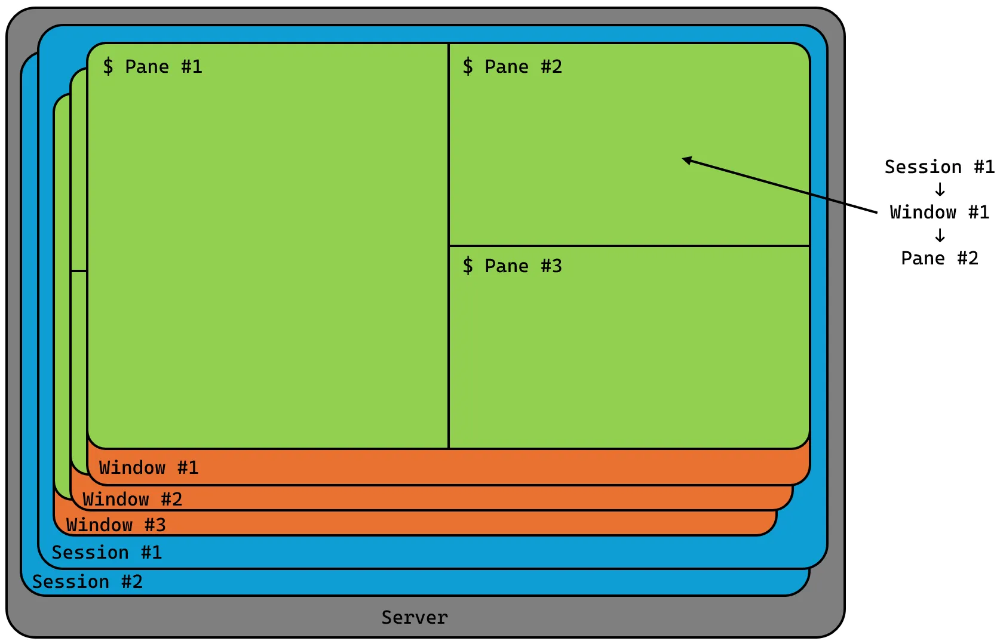
点击放大接下来我们会逐层来讲解它们的用法。
5.1.2 Session 会话#
Session 是独立存在，互不影响的。一个 Session 启动后，里面运行的程序不会随用户断开 ssh 而关闭，只会因为 Session 关闭而关闭。
同时，一个 Session 创建后，环境变量、当前目录等状态是独立的，一个 Session 就好似一个真实的 ssh 连接，拥有完整且独立的环境。
2.1 新建 Session
要使用 tmux，第一件事就是创建一个新的 Session，新建方式如下：
tmux：创建一个默认名称的 Session，名称会依次命名为 0, 1, 2, …tmux new：同上tmux new -s [名称]：创建一个自定义名称的 Session.
例如用 tmux new -s demo-session 创建一个新 Session，效果如下：
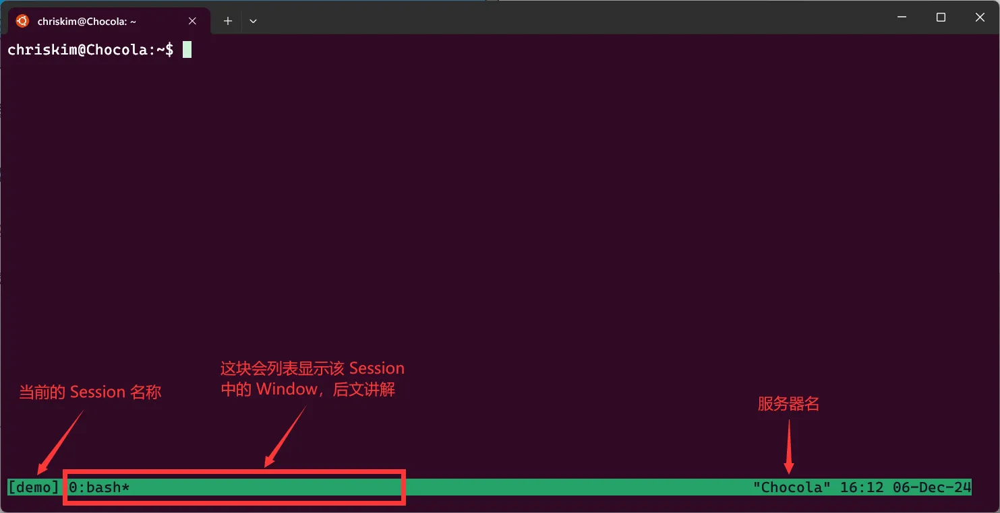
点击放大可以看到，Session 视图下方会显示一条状态条，就像浏览器的标签页一样。状态条从左到右是：Session 名称，打开的 Window 列表（相当于标签页），服务器名，时间。而状态条上面便是终端界面了。
2.2 脱离 Session
如果要脱离 (Detach) 一个启动的 Session，需要使用快捷键：Ctrl + B, D
需要强调的是，Ctrl + B 叫做 prefix，用于表明这个命令是输给 tmux 的，因此所有 tmux 快捷键都是以 prefix 开头的。按完 prefix 请松手，再按后续的具体命令。按完 prefix 请松手，再按后续的具体命令。
脱离后可以看到返回一条信息，提示已经从 demo 中脱离了出来。
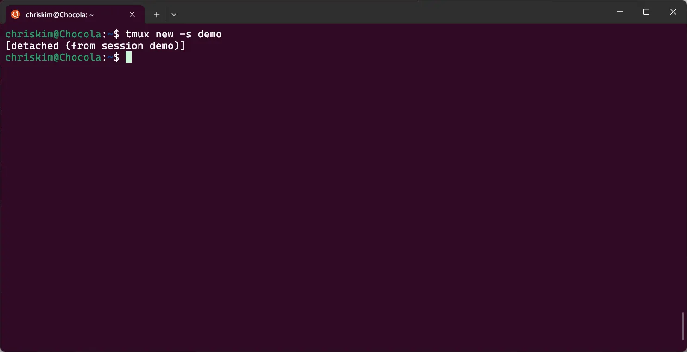
点击放大2.3 显示 Session 列表
如果要列出当前已启动的 Session，可以使用命令：tmux list-sessions
可以看到我启动了三个 Session，分别命名为 demo, demo2, demo3.
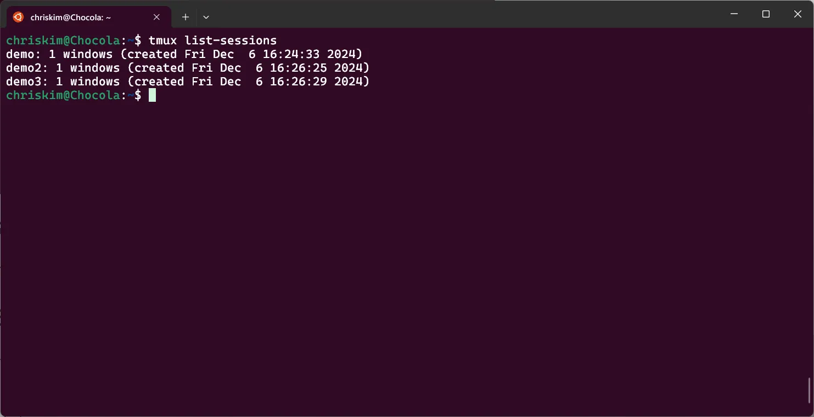
点击放大2.4 连接已创建的 Session
如果要连接 (Attach) 一个已经创建的 Session，命令如下：
tmux attach：默认连接最近使用的 Session.tmux attach -t [名称]：连接指定名称的 Session.
另外，tmux 实际上是可以多个用户连接同一个 Session 的。如果连接到相同 Session，每个人看到的内容都是完全同步的，这对于演示操作来说还是挺好的。
2.5 关闭已创建的 Session
如果要关闭已经创建的 Session，有几种方式：
- 如果连接着一个 Session，想关闭当前这个 Session：
exit - 如果连接着一个 Session，想关闭除了当前的其他所有 Session：
tmux kill-session -a - 关闭指定名称的 Session：
tmux kill-session -t [名称] - 强制关闭所有 Session（不推荐）：
tmux kill-server
5.1.3 Window 窗口#
一个 Session 中可以打开多个 Window，Window 会继承它所在 Session 的环境变量，同时 Window 之间也是独立存在，互不影响的。Window 会因为对应 Session 的关闭而关闭。
用浏览器来类比，一个 Session 是一个浏览器窗口，而一个 Window 是当前浏览器窗口的一个标签页。如下图所示：
Window 是在 Session 中启动的，因此下文所有 Window 操作必须在某个 Session 内。
3.1 新建和关闭 Window
如果要新建 (create) Window，可以使用快捷键：Ctrl + B, C
创建新 Window 后，注意下面的 tmux 状态栏，可以发现列表中已经多了一个 Window。列表中的数字代表 Window 编号，冒号后显示的是对应 Window 中正在运行的程序名。最后如果以 * 结尾，则是当前使用的 Window，最后如果以 - 结尾，则是上一个使用的 Window。
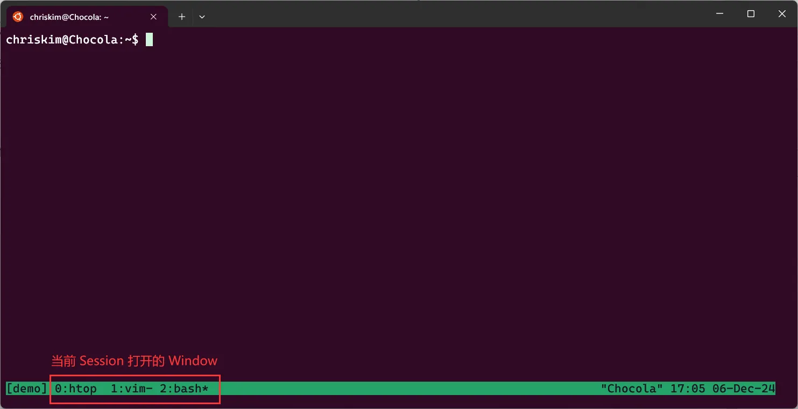
点击放大如果要关闭，可以使用 Ctrl + B, Ctrl + & （带确认，输入 y 回车）
需要提醒的是，操作指令是 &，而不是 7，因此记得按 SHIFT 键，同时把输入法关了。
3.2 切换 Window
如果要切换 Window，使用快捷键是很方便的：
- Ctrl + B, P：切换到前 (previous) 一个 Window.
- Ctrl + B, N：切换到后 (next) 一个 Window.
- Ctrl + B, [数字]：切换到对应序号的 Window.
- Ctrl + B, W：使用列表切换，上下键选择，回车确认。如果你开了超多 Window 则很实用。
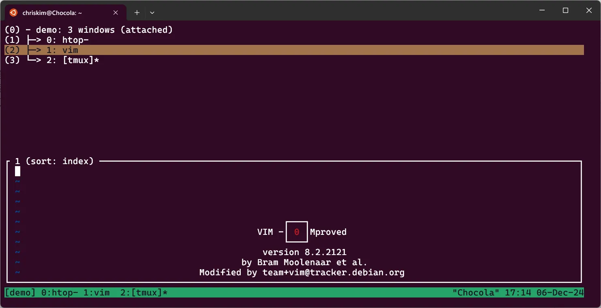
点击放大5.1.4 Pane 窗格#
一个 Window 可以切分为多个 Pane，这是我觉得 tmux 非常实用的一点。例如如果你想在运行代码的同时监控服务器状态，便可以直接左右分屏：
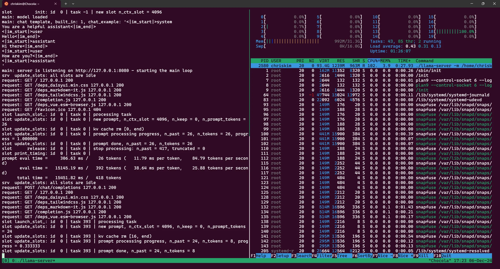
点击放大Pane 是在 Window 中启动的，因此下文所有 Pane 操作必须在某个 Window 内。
4.1 切分和关闭 Pane
如果要将当前的 Pane 进行切分，可以用快捷键：
- Ctrl + B, %：竖直切分
- Ctrl + B, "：水平切分
需要提醒的是，操作指令是 % 和 "，而不是 4 和 ,，因此记得按 SHIFT 键，同时把输入法关了。
另外大家可能会觉得这个快捷键设计得莫名其妙，但是大家低头看下键盘，% 是不是刚好在键盘横向中点，" 是不是正好是纵向中点，这样想必好记多了吧。
如果要关闭，可以使用 Ctrl + B, X （带确认，输入 y 回车）
4.2 切换 Pane
如果要切换当前的 Pane，可以用：Ctrl + B, 方向键 来导航。
另外，激活的 Pane 的识别方式是观察边框，绿色边框围起来的就是当前激活的 Pane.
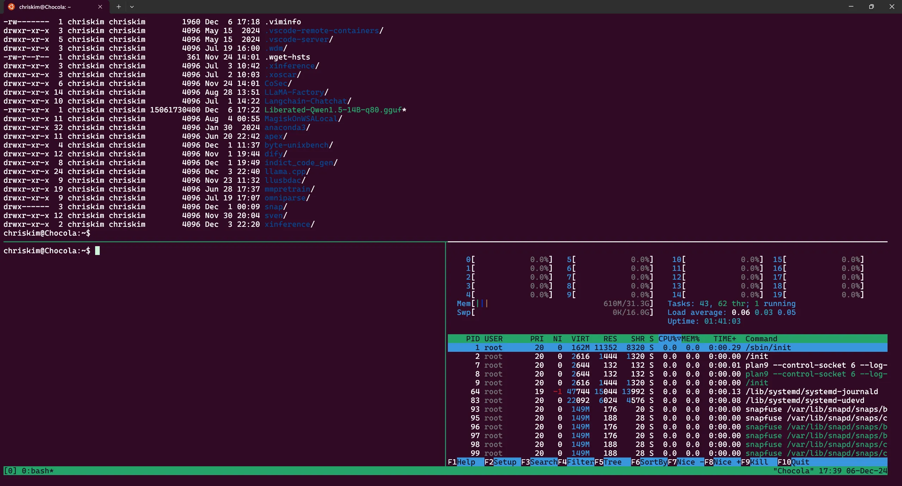
点击放大4.3 调整 Pane 大小
如果要调整当前激活的窗格的大小，可以使用快捷键：
- 1 个单位微调：Ctrl + B, Ctrl + 方向键
- 5 个单位调整：Ctrl + B, Alt + 方向键
5.1.5 杂项#
5.1 滚动历史记录
进入 tmux 后，可以发现鼠标滚轮的窗口滚动失效了。如果要滚动历史记录，可以使用以下方式：
- Ctrl + B,
[：进入滚动模式，这个时候就能拿滚轮滚动了，最后按 q 退出。 - Ctrl + B,
PageUp：进入滚动模式同时往上滚一页，这个时候就能拿滚轮滚动了，最后按 q 退出。
5.2 启用鼠标支持
现代的 CLI 已不是枯燥乏味的纯命令行了，tmux 是可以支持鼠标操作的。
新建配置文件 ~/.tmux.conf，在里面填写 set -g mouse on，即可开启鼠标支持。开启鼠标支持后 tmux 多了很多实用的特性，例如：
- 右键菜单，按住右键可以调出
- 左键按住窗格边缘拖动来缩放大小
- 左键点击窗格，可以激活该窗格
- 左键点击窗口，可以切换到该窗口
- 直接拿滚轮滚动历史记录
- ……
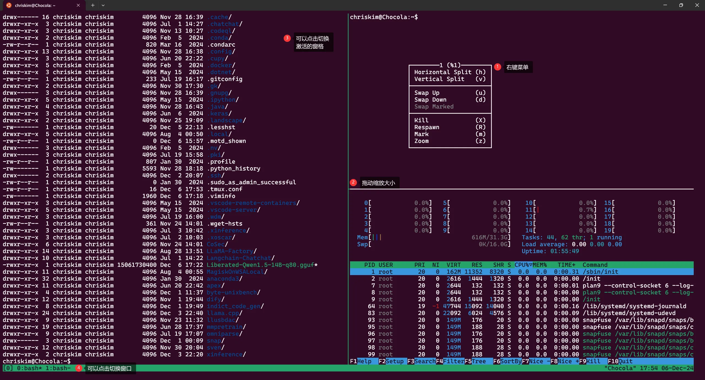
点击放大不过开启鼠标操作后，可能会与一些 SSH 客户端已有的快捷操作冲突，例如 Windows Terminal 的左键框选，右键粘贴就会和 tmux 的左右键冲突。大家按自己情况决定是否启用吧。
5.2 Linux 系统 CUDA 多版本共存以及切换#
今天在安装某国产机器学习框架时，发现其环境要求极为刁钻，仅支持三个 CUDA 的版本号。我又不愿意破坏当前的 CUDA 环境，通过查询和实验，发现了一个非常不错的 CUDA 多版本共存方案，可以方便地进行 CUDA 版本的切换，下面进入教程。
教程以 Windows 下的 Ubuntu WSL2 为例，正常的 Linux 该方法也一样通用。
5.2.1 安装较新版本显卡驱动#
由于每个 CUDA 版本都有显卡驱动版本号限制，低版本的显卡驱动是不支持高版本 CUDA 的，反之是兼容的。因此建议安装一个较新版本的显卡驱动（至少要支持你想运行的最高版本的 CUDA），这样系统中将要安装的多个 CUDA 版本就都能正常运行了。
- 当前系统的显卡驱动版本可使用
nvidia-smi指令查询 - CUDA 要求的驱动版本可在文档的表三查阅：https://docs.nvidia.com/cuda/cuda-toolkit-release-notes/index.html
- NVIDIA 显卡驱动可在官网下载：https://www.nvidia.com/download/index.aspx
显卡驱动的具体安装不展开赘述，如果你不会安装，那么建议查询显卡驱动安装相关教程。
5.2.2 安装需要的 CUDA 版本#
前往 CUDA 的下载官网：https://developer.nvidia.com/cuda-toolkit-archive
选择自己需要的 CUDA 版本，选择对应的系统进行下载，建议选择 .run 形式的安装器。以 root 权限运行 .run 安装器，根据提示进行安装即可。过程中需要注意取消勾选显卡驱动，不要重新安装驱动，因为我们上一步已经安装过了。
如果你有多个需要的 CUDA 版本，那就依次下载安装即可，后文我们再介绍如何进行版本切换。
5.2.3 安装对应的 cuDNN 库#
前往 cuDNN 的下载官网：https://developer.nvidia.com/cudnn-archive
注意选择和上一步安装的 CUDA 版本适配的 cuDNN 版本，我们需要分别给每个版本的 CUDA 安装对应版本的 cuDNN 库。建议选择 .tar.xz 形式的压缩包。
下载好后，使用 tar -xvf xxx.tar.xz 解压 cuDNN 库，然后直接执行以下指令进行安装：（注意在正确位置填上对应的版本号，例如 cuda-12.3）
sudo cp cudnn-*-archive/include/cudnn*.h /usr/local/cuda-<版本号>/include
sudo cp -P cudnn-*-archive/lib/libcudnn* /usr/local/cuda-<版本号>/lib64
sudo chmod a+r /usr/local/cuda-<版本号>/include/cudnn*.h /usr/local/cuda-<版本号>/lib64/libcudnn*5.2.4 配置切换脚本#
我们的切换方式原理是软链接。每个 CUDA 版本安装后，会在 /usr/local 创建对应版本的文件夹，例如 cuda-12.3，我们可以创建一个软链接 /usr/local/cuda，让软链接指向对应版本的 CUDA，我们通过修改软链接的指向就能修改 CUDA 版本了。
我们通过文本编辑器打开用户文件夹下的 .bashrc，这里用 vim 为例：vim ~/.bashrc
在该文件尾部添加以下内容：
export PATH=$PATH:/usr/local/cuda/bin
export LD_LIBRARY_PATH=$LD_LIBRARY_PATH:/usr/local/cuda/lib64
function switch_cuda {
if [[ $1 =~ ^[0-9]+\.[0-9]+$ ]]; then
sudo rm /usr/local/cuda
sudo ln -s /usr/local/cuda-$1 /usr/local/cuda
nvcc --version
else
echo invalid version
fi
}注意，如果你的 .bashrc 内已经有类似于前两行的内容，那么需要删除它，替换为我的写法。
添加后保存该文件，然后使用 source .bashrc 刷新该文件。
5.2.5 测试多版本切换#
上述脚本在 bash 内注册了一个函数叫 switch_cuda，通过调用该函数即可快速切换 CUDA 版本。用法为：switch_cuda xx.x (版本号)
以下是切换的演示，首先将 CUDA 版本切换到了 11.6，然后再切回 12.3：
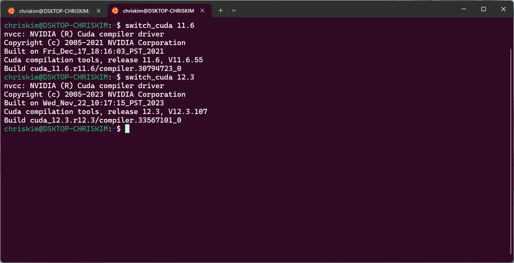
点击放大